СП 275.1325800.2016 «Конструкции ограждающие жилых и общественных зданий. Правил»
О документе: разработчики, утверждение, регистрация, ключевые слова
СВОД ПРАВИЛ СП 275.1325800.2016
Издание официальное
1. ИСПОЛНИТЕЛЬ - Федеральное государственное бюджетное учреждение «Научно-исследовательский институт строительной физики Российской академии архитектуры и строительных наук» (НИИСФ РААСН) 2. ВНЕСЕН Техническим комитетом по стандартизации ТК 465 «Строительство» 3. 3 ПОДГОТОВЛЕН к утверждению Департаментом градостроительной деятельности и архитектуры Министерства строительства и жилищнокоммунального хозяйства Российской Федерации (Минстрой России) 4. 4 УТВЕРЖДЕН приказом Министерства строительства и жилищнокоммунального хозяйства Российской Федерации от 16 декабря 2016 г. № 950/пр и введен в действие с 17 июня 2017 г. 5. 5 ЗАРЕГИСТРИРОВАН Федеральным агентством по техническому регулированию и метрологии (Росстандарт)
В случае пересмотра (замены) или отмены настоящего свода правил соответствующее уведомление будет опубликовано в установленном порядке. Соответствующая информация, уведомление и тексты размещаются также в информационной системе общего пользования - на официальном сайте разработчика (Минстрой России) в сети Интернет
© Минстрой России,2016
Настоящий нормативный документ не может быть полностью или частично воспроизведен, тиражирован и распространен в качестве официального издания на территории Российской Федерации без разрешения Минстроя России
- 1 Область применения………………………………………….
- 2
- Нормативные ссылки…………………………………………
- 3
- Термины и определения……………………………………..
- 4 Общие положения……………………………………………..
- 5 Нормативные требования к звукоизоляции воздушного и ударного шумов ограждающими конструкциями зданий………………………
- 6 Методы определения индекса изоляции воздушного шума Rw , дБ, индекса приведенного уровня ударного шума Lnw , дБ, внутренними ограждениями зданий………………………………………………………..
- 7 Метод определения оценочного параметра звукоизоляции наружных ограждений RА тран , дБ А …………………………………………
- 8 Методы расчета требуемой звукоизоляции стен, пере- городок и междуэтажных перекрытий зданий…………………………...
- 9 Расчеты частотных характеристик звукоизоляции внутренних ограждающих конструкций жилых и общественных зданий………….
- 9.1 Расчет изоляции воздушного шума однослойными плоскими тяжелыми ограждениями сплошного сечения (железобетон, бетон различных видов , кирпич и т.п)………………
- 9.2 Расчет изоляции воздушного шума однослойным плоским тон- ким ограждением (металл, стекло, гипсокартонный лист и т.п)………………………………………………………………………………..
- 9.3 Расчет изоляции воздушного шума ограждением из двух плоских тонких листов одинаковой толщины с воздушным промежутком между ними (двойные глухие остекления, обшивки с двух сторон гипсокартонными, гипсоволокнистыми листами, металлическими листами и т.п) по каркасу из тонкостенного металлического профиля
- или деревянных брусков)………………………………………………….
- 9.4 Расчет изоляции воздушного шума ограждением из двух плос- ких тонких листов разной толщины с воздушным промежутком между ними (двойные глухие остекления, обшивка с двух сторон гипсокартонными, гипсоволокнистыми, металлическими листами и
- т.п.) по каркасу из тонкостенного металлического профиля или де- ревянных брусков……………………………………………………………
- 9.5 Расчет изоляции воздушного шума каркасно-обшивной перего- родкой при заполнении воздушного промежутка пористым или по- ристо-волокнистым материалом………………………………..
- 9.6 Расчет изоляции воздушного шума ограждением с гибкой плитой на относе…………………………………………………………….
- 9.7 Расчет изоляции воздушного шума двойным ограждением со связью по контуру……………………………………………………………
- 9.8 Расчет изоляции воздушного шума двойным ограждением типа «сэндвич»…………………………………………………………………….
- 9.9 Расчет изоляции воздушного шума составными ограждениями, а также ограждениями со щелями и отверстиями……………………
- 9.10 Расчет изоляции воздушного шума междуэтажным перекрыти- ем с полом из рулонных материалов (типа линолеум) и без звуко- изоляционного упругого слоя…………....................................................
- 9.11 Расчет индекса изоляции воздушного шума перекрытием типа «плавающий пол»…………………………………………………………….
- 9.12 Расчет приведенного индекса изоляции ударного шума между- этажным перекрытием с полом на звукоизоляционном упругом слое…………………………………………………………………………
- 9.13 Ориентировочные ускоренные методы оценки индекса изоля- ции воздушного шума и приведенного индекса изоляции ударного шума…………………………………………………………………………….
- 10 Проектирование ограждающих конструкций, обеспечивающих нор- мативную звукоизоляцию………………………………………………….
- 10.1 Рекомендации общего характера…………………………………….
- 10.2 Проектирование внутренних стен и перегородок…………………
- 10.3 Проектирование междуэтажных перекрытий………………………
- 10.4 Проектирование стыков и узлов……………………………………
- 10.5 Проектирование элементов ограждающих конструкций, связан- ных с инженерным оборудованием зданий…………………………
Приложение А (справочное) Примеры расчета звукоизолирующей способности перегородок, стен и междуэтажных пе-
рекрытий………………………………………………… Приложение Б (рекомендуемое) Расчет изоляции воздушного шума криволинейным (в частности цилиндрическим) ограждением……………………………………………….. Приложение В (рекомендуемое) Расчет изоляции воздушного шума двойным ограждением без жесткой связи по контуру…
Дата введения 2017-06-17
УДК 699.8 ОКС 13.140, 91.120.20
Ключевые слова: здание, ограждающая конструкция, изоляция воздушного шума, изоляция ударного шума, индекс изоляции воздушного шума, индекс приведенного уровня ударного шума, расчет, проектирование
ИСПОЛНИТЕЛИ
| Руководитель организации-разработчика «Научно-исследовательский институт строительной физики Российской академии архитектуры и строительных наук» | И.Л. Шубин |
|---|---|
| Руководитель разработки Директор | И.Л. Шубин |
| Исполнитель - главный научный сотрудник | М.А.Пороженко |
Введение
6 ВВЕДЕН ВПЕРВЫЕ
Настоящий свод правил разработан с учетом обязательных требований, установленных в Федеральном законе от 27 декабря 2002 г. № 184-Ф3 «О техническом регулировании», Федеральном законе от 30 декабря 2009 г. № 384-Ф3 «Технический регламент о безопасности зданий и сооружений».
Свод правил разработан авторским коллективом НИИСФ РААСН ( д-р техн. наук И.Л. Шубин , инж. М. А. Пороженко ).
1Область применения
Настоящий свод правил устанавливает требования к расчету и проектированию ограждающих конструкций жилых и общественных зданий и распространяется на методы расчета звукоизоляции воздушного и ударного шума внутренними и наружными ограждающими конструкциями жилых и общественных зданий и их элементами (окна, двери, ворота и т.п.), на методы оценки соответствия звукоизоляции строительных конструкций строительным нормам, приведенным в СП 51.13330.2011. Настоящий свод правил распространяется также на методы проектирования ограждающих конструкций зданий, обеспечивающих требуемую звукоизоляцию воздушного и ударного шума и позволяющих повысить акустическую комфортность проживания, отдыха и труда населения в помещениях различного назначения.
Настоящий свод правил не распространяется на методы расчета нестандартных конструкций, звукоизоляция которых может быть определена исключительно по результатам исследований в специальных акустических камерах.
2Нормативные ссылки
В настоящем своде правил использованы нормативные ссылки на следующие документы:
ГОСТ 23166-99 Блоки оконные. Общие технические условия
ГОСТ 27296-2012 Здания и сооружения. Методы измерения звукоизоляции ограждающих конструкций
\_\_\_\_\_\_\_\_\_\_\_\_\_\_\_\_\_\_\_\_\_\_\_\_\_\_\_\_\_\_\_\_\_\_\_\_\_\_\_\_\_\_\_\_\_\_\_\_\_\_\_\_\_\_\_\_\_\_\_\_\_\_\_\_\_\_\_\_
Издание официальное
Свод правил
СП 275.1325800.2016 СП 51.13330.2011 «СНиП 23-03-2003 Защита от шума» ГОСТ Р ЕН 12354-1-2012 Акустика зданий. Методы расчета акустических характеристик зданий по характеристикам их элементов. Часть 1. Звукоизоляция воздушного шума между помещениями ГОСТ Р ЕН 12354-2-2012 Акустика зданий. Методы расчета акустических характеристик зданий по характеристикам их элементов. Часть 2. Звукоизоляция ударного шума между помещениями ГОСТ Р ЕН 12354-3-2012 Акустика зданий. Методы расчета акустических характеристик зданий по характеристикам их элементов. Часть 3. Звукоизоляция внешнего шума ГОСТ Р 56769-2015 (ИСО 717-1:2013) Здания и сооружения. Оценка звукоизоляции воздушного шума Примечание - При пользовании настоящим сводом правил целесообразно проверить действие ссылочных документов в информационной системе общего пользования - на официальном сайте федерального органа исполнительной власти в сфере стандартизации в сети Интернет или по ежегодному информационному указателю «Национальные стандарты», который опубликован по состоянию на 1 января текущего года, и по выпускам ежемесячного информационного указателя «Национальные стандарты» за текущий год. Если заменен ссылочный документ, на который дана недатированная ссылка, то рекомендуется использовать действующую версию этого документа с учетом всех внесенных в данную версию изменений. Если заменен ссылочный документ, на который дана датированная ссылка, то рекомендуется использовать версию этого документа с указанным выше годом утверждения (принятия). Если после утверждения настоящего свода правил в ссылочный документ, на который дана датированная ссылка, внесено изменение, затрагивающее положение, на которое дана ссылка, то это положение рекомендуется применять без учета данного изменения. Если ссылочный документ отменен без замены, то положение, в котором дана ссылка на него, рекомендуется применять в части, не затрагивающей эту ссылку. Сведения о действии сводов правил целесообразно проверить в Федеральном информационном фонде стандартов.
3Термины и определения
В настоящем своде правил применены следующие термины с соответствующими определениями:
- 3.1изоляция воздушного шума R ограждающей конструкцией, дБ
- Величина, равная десяти десятичным логарифмам отношения падающей на ограждение звуковой энергии к энергии, проходящей через ограждение. Примечание - В настоящем своде правил под звукоизоляцией воздушного шума подразумевается обеспечиваемое разделяющим два помещения ограждением снижение уровней звукового давления R , дБ, приведенное к условиям равенства площади ограждающей конструкции и эквивалентной площади звукопоглощения в защищаемом помещении где L1 - уровень звукового давления в помещении с источником звука, дБ; L2 - уровень звукового давления в защищаемом помещении, дБ; S - площадь ограждающей конструкции, м² ; A - эквивалентная площадь звукопоглощения в защищаемом помещении, м² .
- 3.2изоляция ударного шума перекрытием
- Величина, характеризующая снижение ударного шума перекрытием.
- 3.3частотная характеристика изоляции воздушного шума R ( f ) ограждающей конструкцией, дБ
- Значения изоляции воздушного шума R ограждающей конструкцией в каждой из третьоктавных полос со среднегеометрическими частотами f , Гц, в диапазоне от 100 до 3150 Гц, или в каждой из октавных полос со среднегеометрическими частотами от 125 до 4000 Гц, представляемые в табличной или графической форме.
- 3.4приведенный уровень ударного шума под перекрытием; Ln , дБ
- Значение, характеризующее изоляцию ударного шума перекрытием, условно приведенная к значению эквивалентной площади звукопоглощения в защищаемом помещении.
- 3.5частотная характеристика приведенного уровня ударного шума под перекрытием
- Значения приведенных уровней ударного шума под перекрытием Ln , дБ в каждой из третьоктавных полос со среднегеометрическими частотами f , Гц, в диапазоне от 100 до 3150 Гц, или в каждой из октавных полос со среднегеометрическими частотами от 125 до 4000 Гц, представляемые в табличной или графической форме.
- 3.6индекс изоляции воздушного шума; Rw
- Значение, служащее для оценки звукоизолирующей способности ограждающей конструкции одним числом, определяется сопоставлением частотной характеристики изоляции воздушного шума со специальной оценочной кривой, дБ.
- 3.7индекс приведенного уровня ударного шума; Lnw
- Значение, служащее для оценки изолирующей способности перекрытия одним числом, определяется сопоставлением частотной характеристики изоляции воздушного шума со специальной оценочной кривой, дБ.
4Общие положения
Расчет звукоизоляции ограждающих конструкций должен проводиться при разработке конструктивных решений ограждений, применении новых строитель- ных материалов и изделий. Окончательная оценка звукоизоляции таких конструкций должна проводиться на основании испытаний по ГОСТ 27296.
5Нормативные требования к звукоизоляции воздушного и ударного шумов ограждающими конструкциями зданий
Нормируемым параметром звукоизоляции наружных ограждающих конструкций (окон, остеклений) является звукоизоляция RАтран , дБ А , представляющая собой изоляцию внешнего шума, создаваемого потоком городского транспорта или транспорта сельских поселений.
Таблица 1- Нормативные требования к звукоизоляции внутренних ограждающих конструкций зданий
| Наименование и расположение ограждающей конструкции | R w , дБ | L* nw , дБ |
|---|---|---|
| Жилые здания | Жилые здания | Жилые здания |
| 1 Перекрытия между помещениями квартир и перекрытия, отделяющие помещения квартир от холлов, лестничных клеток и используемых чердачных помещений | 52 | 60 |
| 2 Перекрытия между помещениями квартир и расположенными под ними магазинами | 55 | 60 |
| 3 Перекрытия между комнатами в квартире в двух уровнях | 45 | 63 |
| 4 Перекрытия между жилыми помещениями общежитий | 50 | 60 |
| 5 Перекрытия между помещениями квартиры и расположенными под ними ресторанами, кафе, спортивными залами | 57 | 63 ** |
| 6 Перекрытия между помещениями квартиры и расположенными под ними административ- ными помещениями, офисами | 52 | 63 |
Продолжение таблицы 1
| 7 Стены и перегородки между квартирами, между помещениями квартир и офисами; между помещениями квартир и лестничными клетками, холлами, коридорами, вестибюлями | 52 | - |
|---|---|---|
| 8 Стены между помещениями квартир и мага- зинами | 55 | - |
| 9 Стены и перегородки, отделяющие помеще- ния квартир от ресторанов, кафе, спортивных залов | 57 | - |
| 10 Перегородки без дверей между комнатами, между кухней и комнатой в квартире | 43 | - |
| 11 Перегородки между санузлом и комнатой одной квартиры | 47 | |
| 12 Стены и перегородки между комнатами общежитий | 50 | - |
| 13 Входные двери квартир, выходящие на лестничные клетки, в вестибюли и коридоры: | 32 | - |
| Гостиницы | Гостиницы | Гостиницы |
| 14 Перекрытия между номерами - гостиницы, имеющие по международной классификации пять и четыре звезды - гостиницы, имеющие по международной | 53 | 55 |
| классификации три звезды | 51 | 58 |
| - гостиницы, имеющие по международной классификации менее трех звезд | 50 | 60 |
| 15 Перекрытия, отделяющие номера от по- мещений общего пользования (вестибюли, холлы, буфеты): - гостиницы, имеющие по международной классификации пять и четыре звезды - гостиницы, имеющие по международной | 53 | 55 |
| классификации три звезды и менее | 51 | 58 |
| 16 Перекрытия, отделяющие номера от поме- щений ресторанов, кафе: - гостиницы, имеющие по международной классификации пять и четыре звезды - гостиницы имеющие по международной | 60 | 58 |
| классификации три звезды и менее | 57 | 60 |
Продолжение таблицы 1
| 17 Стены и перегородки между номерами: - гостиницы, имеющие по международной классификации пять и четыре звезды | 53 | - |
|---|---|---|
| - гостиницы, имеющие по международной классификации три звезды | 51 | - |
| - гостиницы, имеющие по международной классификации менее трех звезд | 50 | - |
| 18 Стены и перегородки, отделяющие номера от помещений общего пользования (лестнич- ные клетки, вестибюли, холлы, буфеты): - гостиницы, имеющие по международной классификации пять и четыре звезды | 53 | - |
| - гостиницы имеющие по международной классификации три звезды и менее | 51 | - |
| 19 Стены и перегородки, отделяющие номера от ресторанов, кафе: - гостиницы, имеющие по международной классификации пять и четыре звезды - гостиницы, имеющие по международной | 60 | - |
| классификации три звезды и менее | 57 | - |
| Административные здания, офисы | Административные здания, офисы | Административные здания, офисы |
| 20 Перекрытия между рабочими комнатами, кабинетами, секретариатами и отделяющие эти помещения от помещений общего пользо- вания (вестибюли, холлы) | 45 | 63 |
| 21 Стены и перегородки между кабинетами и отделяющие кабинеты от рабочих комнат | 45 | - |
| 22 Стены и перегородки между офисами, между кабинетами различных фирм | 48 | - |
| Больницы и санатории | Больницы и санатории | Больницы и санатории |
| 23 Перекрытия между палатами, кабинетами врачей | 48 | 60 |
| 24 Перекрытия между операционными и отде- ляющие операционные от палат и кабинетов | 54 | 60 |
| 25 Перекрытия, отделяющие палаты, кабине- ты врачей от помещений общего пользования (вестибюли, холлы) | 50 | 63 |
| 26 Перекрытия, отделяющие палаты, кабине- ты врачей от столовых, кухонь | 54 | 63 |
| 27 Стены и перегородки между палатами, ка- бинетами врачей | 48 | - |
| 28 Стены и перегородки между операционны- ми и отделяющие операционные от других помещений | 54 | - |
Окончание таблицы 1
| Учебные заведения | Учебные заведения | Учебные заведения |
|---|---|---|
| 29 Перекрытия между классами, кабинетами, аудиториями и отделяющие эти помещения от помещений общего пользования (коридоры, вестибюли, холлы) | 47 | 63 |
| 30 Перекрытия между музыкальными класса- ми средних учебных заведений | 55 | 58 |
| 31 Перекрытия между музыкальными класса- ми высших учебных заведений | 57 | 55 |
| 32 Стены и перегородки между классами, ка- бинетами и аудиториями и отделяющие эти помещения от помещений общего пользова- ния | 48 | - |
| 33 Стены и перегородки между музыкальными классами средних учебных заведений и отде- ляющие эти помещения от помещений общего пользования | 55 | - |
| 34 Стены и перегородки между музыкальными классами высших учебных заведений | 57 | |
| Детские дошкольные учреждения | Детские дошкольные учреждения | Детские дошкольные учреждения |
| 35 Перекрытия между групповыми комнатами, спальнями | 47 | 63 |
| 36 Перекрытия, отделяющие групповые ком- наты, спальни от кухонь | 51 | 63 |
| 37 Стены и перегородки между групповыми комнатами, спальнями и между другими дет- скими комнатами | 47 | - |
| 38 Стены и перегородки, отделяющие группо- вые комнаты, спальни от кухонь | 52 | - |
6 Методы определения индекса изоляции воздушного шума Rw , дБ, индекса приведенного уровня ударного шума Lnw , дБ, внутренними ограждениями зданий
6.1 Индекс изоляции воздушного шума Rw , дБ, ограждающей конструкцией с известной (рассчитанной или измеренной) частотной характеристикой изоляции воздушного шума (ГОСТ Р ЕН 12354-1) определяется сопоставлением этой частотной характеристики со значениями оценочной кривой, приведенной в таблице 2 для показателя 1.
Для определения индекса изоляции воздушного шума Rw необходимо определить сумму неблагоприятных отклонений частотной характеристики конкретной конструкции от оценочной кривой. Неблагоприятными считаются отклонения вниз от оценочной кривой.
Если сумма неблагоприятных отклонений максимально приближается к 32 дБ, но не превышает это значение, значение индекса Rw составляет 52 дБ.
Если сумма неблагоприятных отклонений превышает 32 дБ, оценочная кривая смещается вниз на целое число децибел так, чтобы сумма неблагоприятных отклонений не превышала указанное значение.
Если сумма неблагоприятных отклонений значительно меньше 32 дБ или неблагоприятные отклонения отсутствуют, оценочная кривая смещается вверх на целое число децибел так, чтобы сумма неблагоприятных отклонений от смещенной оценочной кривой максимально приближалась к 32 дБ, но не превышала это значение.
За значение индекса Rw принимается ордината смещенной вверх или вниз оценочной кривой в третьоктавной полосе со среднегеометрической частотой 500 Гц.
Допускается оценивать изоляцию воздушного шума ограждающей конструкцией Rw , дБ, по ГОСТ Р 56769-2015 (раздел 4).
6.2 Индекс приведенного уровня ударного шума Lnw для перекрытия с известной частотной характеристикой приведенного уровня ударного шума определяется по ГОСТ Р ЕН 12354-2 сопоставлением этой частотной характеристики с оценочной кривой, приведенной в таблице 2 для показателя 2.
Для вычисления индекса Lnw необходимо определить сумму неблагоприятных отклонений конкретной частотной характеристики от оценочной кривой. Неблагоприятными считаются отклонения вверх от оценочной кривой.
Таблица 2 - Значения оценочных кривых изоляции воздушного шума, приведенного уровня ударного шума и эталонного спектра шума транспортного потока
| Вид спектра | Значение для среднегеометрической частоты 1/3-октавной полосы, Гц | Значение для среднегеометрической частоты 1/3-октавной полосы, Гц | Значение для среднегеометрической частоты 1/3-октавной полосы, Гц | Значение для среднегеометрической частоты 1/3-октавной полосы, Гц | Значение для среднегеометрической частоты 1/3-октавной полосы, Гц | Значение для среднегеометрической частоты 1/3-октавной полосы, Гц | Значение для среднегеометрической частоты 1/3-октавной полосы, Гц | Значение для среднегеометрической частоты 1/3-октавной полосы, Гц | Значение для среднегеометрической частоты 1/3-октавной полосы, Гц | Значение для среднегеометрической частоты 1/3-октавной полосы, Гц | Значение для среднегеометрической частоты 1/3-октавной полосы, Гц | Значение для среднегеометрической частоты 1/3-октавной полосы, Гц | Значение для среднегеометрической частоты 1/3-октавной полосы, Гц | Значение для среднегеометрической частоты 1/3-октавной полосы, Гц | Значение для среднегеометрической частоты 1/3-октавной полосы, Гц | Значение для среднегеометрической частоты 1/3-октавной полосы, Гц | |
|---|---|---|---|---|---|---|---|---|---|---|---|---|---|---|---|---|---|
| 100 | 125 | 160 | 200 | 250 | 315 | 400 | 500 | 630 | 800 | 1000 | 1250 | 1600 | 2000 | 2500 | 3150 | ||
| 1 | Оценочный спектр изоляции воздушного шу- ма R , дБ | 33 | 36 | 39 | 42 | 45 | 48 | 51 | 52 | 53 54 | 55 | 56 | 56 | 56 | 56 | 56 | |
| 2 | Оценочный спектр приве- денного уровня ударного шума L n ,дБ | 62 | 62 | 62 | 62 | 62 | 62 | 61 60 | 59 | 58 57 | 54 | 51 | 48 | 45 | 42 | ||
| 3 | Эталонный спектр шума транспортного потока L j , дБ | 55 | 55 | 56 | 59 | 60 | 61 | 62 | 63 | 64 | 66 | 67 | 66 | 65 | 64 | 62 | 60 |
СП 275.1325800.2016
Если сумма неблагоприятных отклонений максимально приближается к 32 дБ, но не превышает это значение, значение индекса Lnw составляет 60 дБ.
Если сумма неблагоприятных отклонений превышает 32 дБ, оценочная кривая смещается вверх на целое число децибел так, чтобы сумма неблагоприятных отклонений от смещенной кривой не превышала указанное значение.
Если сумма неблагоприятных отклонений значительно меньше 32 дБ или неблагоприятные отклонения отсутствуют, оценочная кривая смещается вниз на целое число децибел так, чтобы сумма неблагоприятных отклонений от смещенной кривой максимально приближалась к 32 дБ, но не превышала это значение.
За значение индекса Lnw принимается ордината смещенной (вверх или вниз) оценочной кривой в 1/3-октавной полосе со среднегеометрической частотой 500 Гц.
Примеры:
1 Определить индекс изоляции воздушного шума Rw, дБ. перегородкой из ячеистого бетона плотностью 500 кг/м³ , толщиной 250 мм, с двух сторон гипсовая штукатурка толщиной по 10 мм с каждой стороны
Расчет проводится по форме таблицы 3. Вносим в таблицу значения оценочной кривой и находим неблагоприятные отклонения измеренной частотной характеристики от оценочной кривой (показатель 3). Сумма неблагоприятных отклонений составила 78 дБ, что значительно превышает 32 дБ. Смещаем оценочную кривую вниз на 4 дБ и находим сумму неблагоприятных отклонений от смещенной оценочной кривой. Сумма неблагоприятных отклонений составляет 31 дБ, что менее 32 дБ. За значение индекса изоляции воздушного шума принимаем значение смещенной оценочной кривой в 1/3-октавной полосе частот со среднегеометрической частотой 500 Гц; таким образом, индекс изоляции воздушного шума конкретной перегородкой составляет Rw = 48 дБ.
2 Определить индекс приведенного уровня ударного шума перекрытием, частотная характеристика которого приведена в таблице 4 (показатель 1).
Вносим в таблицу значения приведенного уровня ударного шума перекрытием Ln, дБ (показатель 1) и находим неблагоприятные отклонения от оценочной кривой (показатель 3). Сумма неблагоприятных отклонений составила 7 дБ, что значительно меньше 32 дБ. Смещаем оценочную кривую вниз на 4 дБ и находим неблагоприятные отклонения от смещенной оценочной кривой. Сумма неблагоприятных отклонений в этом случае составляет 31 дБ, что меньше 32 дБ.
Таблица 3 - Расчет индекса изоляции воздушного шума перегородкой
| Наименование показа- теля | Значение для среднегеометрической частоты 1/3-октавной полосы, Гц | Значение для среднегеометрической частоты 1/3-октавной полосы, Гц | Значение для среднегеометрической частоты 1/3-октавной полосы, Гц | Значение для среднегеометрической частоты 1/3-октавной полосы, Гц | Значение для среднегеометрической частоты 1/3-октавной полосы, Гц | Значение для среднегеометрической частоты 1/3-октавной полосы, Гц | Значение для среднегеометрической частоты 1/3-октавной полосы, Гц | Значение для среднегеометрической частоты 1/3-октавной полосы, Гц | Значение для среднегеометрической частоты 1/3-октавной полосы, Гц | Значение для среднегеометрической частоты 1/3-октавной полосы, Гц | Значение для среднегеометрической частоты 1/3-октавной полосы, Гц | Значение для среднегеометрической частоты 1/3-октавной полосы, Гц | Значение для среднегеометрической частоты 1/3-октавной полосы, Гц | Значение для среднегеометрической частоты 1/3-октавной полосы, Гц | Значение для среднегеометрической частоты 1/3-октавной полосы, Гц | Значение для среднегеометрической частоты 1/3-октавной полосы, Гц | |
|---|---|---|---|---|---|---|---|---|---|---|---|---|---|---|---|---|---|
| Наименование показа- теля | 100 | 125 | 160 | 200 | 250 | 315 | 400 | 500 | 630 | 800 | 1000 | 1250 | 1600 | 2000 | 2500 | 3150 | |
| 1 | Измеренная частот- ная характеристика R ,дБ (ячеистый бетон плотностью 500кг/м³ ,толщиной 250 мм, с двух сторон гипсовая штукатурка толщиной по 10 мм с каждой стороны) | 33 | 34 | 36 | 38 | 36 | 38 | 42 | 44 | 44 | 47 | 50 | 52 | 54 | 55 | 53 | 52 |
| 2 | Оценочная кривая, дБ | 33 | 36 | 39 | 42 | 45 | 48 | 51 | 52 | 53 | 54 | 55 | 56 | 56 | 56 | 56 | 56 |
| 3 | Неблагоприятные от- клонения,дБ | - | - | 3 | 4 | 9 | 10 | 9 | 8 | 9 | 7 | 5 | 4 | 2 | 1 | 3 | 4 |
| 4 | Оценочная кривая, смещенная вниз на 4 дБ | 29 | 32 | 35 | 38 | 41 | 44 | 47 | 48 | 49 | 50 | 51 | 52 | 52 | 52 | 52 | 52 |
| 5 | Неблагоприятные от- клонения от смещен- ной оценочной кри- вой, дБ | - | - | - | - | 7 | 6 | 5 | 4 | 5 | 3 | 1 | - | - | - | - | - |
| 6 | Индекс изоляции воздушного шума, R w ,дБ | 48 |
Таблица 4 - Расчет индекса изоляции ударного шума перекрытием
| Наименование | показа- | Значение для среднегеометрической частоты 1/3-октавной полосы, Гц | Значение для среднегеометрической частоты 1/3-октавной полосы, Гц | Значение для среднегеометрической частоты 1/3-октавной полосы, Гц | Значение для среднегеометрической частоты 1/3-октавной полосы, Гц | Значение для среднегеометрической частоты 1/3-октавной полосы, Гц | Значение для среднегеометрической частоты 1/3-октавной полосы, Гц | Значение для среднегеометрической частоты 1/3-октавной полосы, Гц | Значение для среднегеометрической частоты 1/3-октавной полосы, Гц | Значение для среднегеометрической частоты 1/3-октавной полосы, Гц | Значение для среднегеометрической частоты 1/3-октавной полосы, Гц | Значение для среднегеометрической частоты 1/3-октавной полосы, Гц | Значение для среднегеометрической частоты 1/3-октавной полосы, Гц | Значение для среднегеометрической частоты 1/3-октавной полосы, Гц | Значение для среднегеометрической частоты 1/3-октавной полосы, Гц | Значение для среднегеометрической частоты 1/3-октавной полосы, Гц | Значение для среднегеометрической частоты 1/3-октавной полосы, Гц |
|---|---|---|---|---|---|---|---|---|---|---|---|---|---|---|---|---|---|
| теля | теля | 100 | 125 | 160 | 200 | 250 | 315 | 400 | 500 | 630 | 800 | 1000 | 1250 | 1600 | 2000 | 2500 | 3150 |
| 1 | Приведенный уровень ударного шума L n , дБ | 59 | 60 | 65 | 65 | 63 | 62 | 60 | 58 | 54 | 50 | 46 | 43 | 43 | 41 | 37 | 33 |
| 2 | Оценочная кривая, дБ | 62 | 62 | 62 | 62 | 62 | 62 | 61 | 60 | 59 | 58 | 57 | 54 | 51 | 48 | 45 | 42 |
| 3 | Неблагоприятные от- клонения,дБ | - | - | 3 | 3 | 1 | - | - | - | - | - | - | - | - | - | - | - |
| 4 | Оценочная кривая, смещенная вниз на 4 дБ | 58 | 58 | 58 | 58 | 58 | 58 | 57 | 56 | 55 | 54 | 53 | 50 | 47 | 44 | 41 | 38 |
| 5 | Неблагоприятные от- клонения от смещенной оценочной кривой, дБ | 1 | 2 | 7 | 7 | 5 | 4 | 3 | 2 | - | - | - | - | - | - | - | - |
| 6 | Индекс изоляции удар- ного шума, L nw , дБ | 56 |
За значение индекса приведенного уровня ударного шума конкретным перекрытием принимаем значение смещенной оценочной кривой на частоте 500 Гц, т.е. Lnw = 56 дБ.
7Метод определения оценочного параметра звукоизоляции наружных ограждений RА тран., дБ А
Значение звукоизоляции наружного ограждения RА тран, дБ А , определяется по формуле
где Li - корректированные по кривой частотной коррекции «А» уровни звукового давления эталонного спектра в i - той третьоктавной полосе частот, дБ (таблица 2, п.3);
Ri - изоляция воздушного шума конструкцией окна в i - той третьоктавной полосе частот, дБ
Результат вычисления округляется до целого значения.
Допускается определять RА тран по ГОСТ Р 56769-2012 (формула 5).
Пример:
Определить звукоизоляцию оконного блока (СПД 6-10-4-14-4.0,76.4 по ГОСТ 23166). Источник шума - поток городского транспорта. Частотная характеристика изоляции воздушного шума данной конструкцией приведена в таблице 5 (показатель 2).
Расчет выполняется по форме таблицы 5. Находим разность между уровнями звукового давления эталонного спектра Lj (показатель 1) и значениями измеренной изоляции воздушного шума оконным блоком Rj (показатель 2) , получаем значения уровней.
Таблица 5 - Расчет RАтран, дБ А , наружного ограждения
| Наименование показателя | Наименование показателя | Значение для среднегеометрической частоты 1/3-октавной полосы, Гц | Значение для среднегеометрической частоты 1/3-октавной полосы, Гц | Значение для среднегеометрической частоты 1/3-октавной полосы, Гц | Значение для среднегеометрической частоты 1/3-октавной полосы, Гц | Значение для среднегеометрической частоты 1/3-октавной полосы, Гц | Значение для среднегеометрической частоты 1/3-октавной полосы, Гц | Значение для среднегеометрической частоты 1/3-октавной полосы, Гц | Значение для среднегеометрической частоты 1/3-октавной полосы, Гц | Значение для среднегеометрической частоты 1/3-октавной полосы, Гц | Значение для среднегеометрической частоты 1/3-октавной полосы, Гц | Значение для среднегеометрической частоты 1/3-октавной полосы, Гц | Значение для среднегеометрической частоты 1/3-октавной полосы, Гц | Значение для среднегеометрической частоты 1/3-октавной полосы, Гц | Значение для среднегеометрической частоты 1/3-октавной полосы, Гц | Значение для среднегеометрической частоты 1/3-октавной полосы, Гц | Значение для среднегеометрической частоты 1/3-октавной полосы, Гц |
|---|---|---|---|---|---|---|---|---|---|---|---|---|---|---|---|---|---|
| 100 | 125 | 160 | 200 | 250 | 315 | 400 | 500 | 630 | 800 | 1000 | 1250 | 1600 | 2000 | 2500 | 3150 | ||
| 1 | Уровни звукового давления эталонного спектра (скор- ректированные по « А »), L j , дБ | 55 | 55 | 56 | 59 | 60 | 61 | 62 | 63 | 64 | 66 | 67 | 66 | 65 | 64 | 62 | 60 |
| 2 | Изоляция воздушного шу- ма оконным блоком R j , дБ | 31 | 27 | 31 | 31 | 34 | 35 | 36 | 37 | 40 | 43 | 44 | 44 | 43 | 44 | 45 | 47 |
| 3 | Разность L j - R j , дБ | 24 | 28 | 26 | 28 | 26 | 26 | 26 | 26 | 24 | 23 | 23 | 22 | 22 | 20 | 17 | 13 |
| 4 | R А тран , дБ А | 38 |
звукового давления «условно» прошедшего через окно шума (показатель 3). Полученные уровни складываем методом энергетического суммирования и вычитаем из 75 дБ А .
Полученное значение и есть RА тран, дБ А .
8Методы расчета требуемой звукоизоляции стен, перегородок и междуэтажных перекрытий зданий
где L ш - октавный уровень звукового давления в помещении с источниками шума на расстоянии 2 м от разделяющего помещения ограждения, дБ;
B и - акустическая постоянная изолируемого помещения, м² ;
S - площадь разделяющего помещения ограждения, м² ;
L доп - допустимый октавный уровень звукового давления, дБ; k - коэффициент, учитывающий нарушение диффузности звукового поля, принимается по таблице 6 в зависимости от среднего коэффициента звукопоглощения α ср в изолируемом помещении
Таблица 6 - Значения коэффицента k в зависимости от среднего коэффициента звукопоглощения α ср в изолируемом помещении
| α ср | k | 10 lg k, д Б |
|---|---|---|
| 0,2 | 1,25 | 1,0 |
| 0,4 | 1,6 | 2,0 |
| 0,5 | 2,0 | 3,0 |
| 0,6 | 2,5 | 4,0 |
где LА 2м - эквивалентный ( максимальный) уровень звука снаружи в 2 м от ограждений, дБА;
LА доп - допустимый эквивалентный (максимальный) уровень звука в помещении, дБА;
S о - площадь окна (всех окон, обращенных в сторону источника шума), м² ;
Требуемую звукоизоляцию R тр А тран , дБА, следует определять из расчета обеспечения допустимых значений проникающего шума как по эквивалентному, так и по максимальному уровню, т.е. из двух значений R тр А тран принимается наибольшее .
9Расчеты частотных характеристик звукоизоляции внутренних ограждающих конструкций жилых и общественных зданий
Примеры расчета звукоизоляции наиболее характерными ограждающими конструкциями приведены в приложении А.
Расчеты изоляции воздушного шума криволинейными ограждениями (в частности цилиндрическими), а также изоляции воздушного шума двойными ограждениями без жесткой связи по контуру приведены в приложениях Б и В.
9.1Расчет изоляции воздушного шума однослойными плоскими тяжелыми ограждениями сплошного сечения (железобетон, бетон различных видов, кирпич и т.п.)
Частотную характеристику изоляции воздушного шума однослойной плоской ограждающей конструкцией сплошного сечения с поверхностной плотностью от 100 до 800 кг/м² (из бетона, железобетона, кирпича, керамзитобетона и подобных материалов) следует определять, изображая её в виде ломаной линии, аналогичной линии ABCD (рисунок 1).
Рисунок 1 - Частотная характеристика изоляции воздушного шума однослойным плоским ограждением
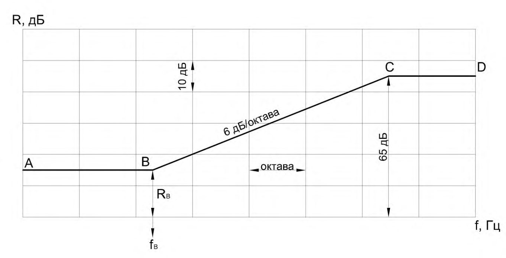
Абсциссу точки В -fB следует определять по таблице 7 в зависимости от толщины и плотности материала конструкции. Значение fB следует округлять до среднегеометрической частоты, в пределах которой находится fB . Границы частот, входящих в 1/3-октавную полосу, приведены в таблице 8.
Ординату точки В -RB , дБ, следует определять в зависимости от эквивалентной поверхностной плотности mэ , по формуле
Эквивалентная поверхностная плотность m э, кг/м² , определяется по формуле
где m - поверхностная плотность, кг/м² , (для ребристых конструкций без учета ребер);
К - коэффициент, учитывающий относительное увеличение изгибной жесткости ограждения из бетона на легких заполнителях, поризованных бетонов и т.п. конструкций по отношению к конструкциям из тяжелого бетона с той же поверхностной плотностью. Для сплошных ограждающих конструкций плотностью γ = 1800 кг/м³ и более К =1.
Таблица 7 - Значения абсциссы fB в зависимости от поверхностной плотности бетона
| Поверхностная плотность бетона γ, кг/м³ | f B , Гц |
|---|---|
| ≥ 1800 | 29000/ h |
| 1600 | 31000/ h |
| 1400 | 33000/ h |
| 1200 | 35000/ h |
| 1000 | 37000/ h |
| 800 | 39000/ h |
| 600 | 40000/ h |
Обозначение: h - толщина ограждения, мм.
Примечание - Для промежуточных значений поверхностной плотности бетона γ частота fB определяется интерполяцией.
Таблица 8
| Среднегеометрическая частота 1/3- октавной полосы, Гц | Границы 1/3-октавной полосы ,Гц |
|---|---|
| 1 | 2 |
| 50 | 45-56 |
| 63 | 57-70 |
| 80 | 71-88 |
| 100 | 80-111 |
| 125 | 112-140 |
| 160 | 141-176 |
| 200 | 177-222 |
| 250 | 223-280 |
| 315 | 281-353 |
| 400 | 354-445 |
| 500 | 446-561 |
| 630 | 562-707 |
| 800 | 708-890 |
| 1000 | 891-1122 |
| 1250 | 1123-1414 |
| 1600 | 1415-1782 |
| 2000 | 1783-2244 |
| 2500 | 2245-2828 |
| 3150 | 2829-3563 |
| 4000 | 3564-4489 |
| 5000 | 4490-5657 |
Для сплошных ограждающих конструкций из бетонов на легких заполнителях, поризованных бетонов, кладки из кирпича и пустотелых керамических блоков коэффициент К определяется по таблице 9.
Для ограждений из бетона плотностью 1800 кг/м³ и более с круглыми пустотами коэффициент К определяется по формуле (6)
где j -момент инерции сечения, м 4 ; b -ширина сечения, м; h пр - приведенная толщина сечения, м.
Для ограждающих конструкций из легких бетонов с круглыми пустотами коэффициент К принимается как произведение коэффициентов, определенных отдельно для сплошных конструкций из легких бетонов и конструкций с круглыми пустотами.
Значение RB , дБ, следует округлять до 0,5 дБ.
Построение частотной характеристики производится в следующей последовательности: из точки В влево проводится горизонтальный отрезок BA , а вправо от точки В проводится отрезок BC с наклоном 6 дБ на октаву до точки С с ординатой Rc = 65дБ, из точки С вправо проводится горизонтальный отрезок СD . Если точка С лежит за пределами нормируемого диапазона частот ( fc >3150 Гц), отрезок СD отсутствует.
Таблица 9 - Значения коэффициента К
| Наименование материала | Марка | Плотность | К |
|---|---|---|---|
| Керамзитобетон | 1500-1550 | 1,1 | |
| Керамзитобетон | 1300-1450 | 1,2 | |
| Керамзитобетон | М-100 | 1200 | 1,3 |
| Керамзитобетон | 1100 | 1,4 | |
| Керамзитобетон | М 150-200 | 1700-1750 | 1,1 |
| Керамзитобетон | 1500-1650 | 1,2 | |
| Керамзитобетон | 1350-1450 | 1,3 | |
| Керамзитобетон | 1250 | 1,4 | |
| Перлитобетон | М-100 | 1400-1450 | 1,2 |
| Перлитобетон | 1300-1350 | 1,3 | |
| Перлитобетон | 1100-1200 | 1,4 | |
| Перлитобетон | 950-1000 | 1,5 | |
| Аглопоритобетон | М-100 | 1300 | 1,1 |
| Аглопоритобетон | 1100-1200 | 1,2 | |
| Аглопоритобетон | 950-1000 | 1,3 | |
| Аглопоритобетон | М-150 | 1500-1800 | 1,2 |
| Шлакопемзобетон | М-100 | 1600-1700 | 1,2 |
| М-150 | 1700-1800 | 1,2 | |
| Газобетон, пенобе- | М-70 | 1000 | 1,5 |
| тон,газосиликат | 800 | 1,6 | |
| 600 | 1,7 | ||
| Кладка из кирпича, пустотелых ке- | 1500-1600 | 1,1 | |
| рамических блоков | 1200-1400 | 1,2 | |
| Гипсобетон,гипс (в т.ч. поризован- ный или с легкими заполнителями) | М 80-100 | 1300 | 1,15 |
| Гипсобетон,гипс (в т.ч. поризован- ный или с легкими заполнителями) | 1200 | 1,25 |
| 1000 | 1,35 |
|---|---|
| 800 | 1,45 |
9.2Расчет изоляции воздушного шума однослойным плоским тонким ограждением (металл, стекло, гипсокартонный лист и т.п.)
Следует отметить, что в приведенных далее расчетах (9,2 -9.5) не учитывается наличие жесткого каркаса. Частотную характеристику изоляции воздушного шума однослойной плоской тонкой ограждающей конструкцией из металла, стекла, гипсокартонных листов и подобных материалов следует определять графическим способом, изображая ее в виде ломаной линии, аналогичной линии ABCD (рисунок 2).
Рисунок 2 - Частотная характеристика изоляции воздушного шума однослойным плоским тонким ограждением
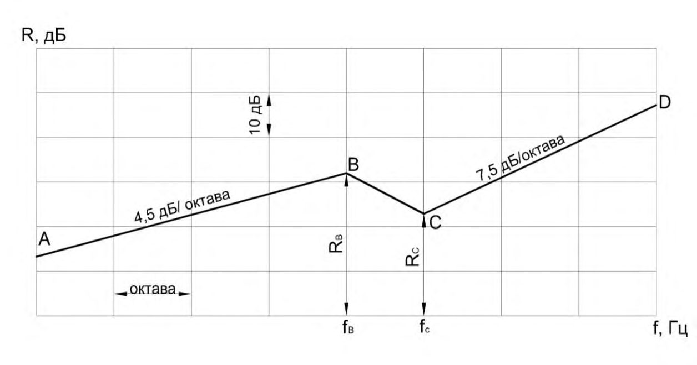
Координаты точек B и C следует определять по таблице 10, значения fB и fc округляются до ближайшей среднегеометрической частоты 1/3-октавной полосы. Наклон участка AB следует принимать 4,5 дБ на октаву, участка CD - 7,5 дБ на октаву.
Таблица 10 - Значения величин fB, fc, RB , и RC для расчета изоляции воздушного шума однослойным плоским ограждением
| Материал конструкции | Плотность, кг/м³ | f B , Гц | f c , Гц | R B , дБ | R C , дБ |
СП 275.1325800.2016
| 1 Сталь | 7800 | 6000/ h | 12000/ h | 40 | 32 |
|---|---|---|---|---|---|
| 2 Алюминиевые спла- вы | 2500-2700 | 6000/ h | 12000/ h | 32 | 32 |
| 3 Стекло силикатное | 2500 | 6000/ h | 12000/ h | 35 | 29 |
| 4 Стекло органическое | 1200 | 17000 / h | 34000/ h | 37 | 30 |
| 6 Гипсокартонные ли- сты | 1100 850 | 19000/ h 19000/ h | 38000/ h 38000/ h | 36 34 | 30 28 |
| 7 Гипсоволокнистые листы | 1100-1200 | 19000/ h | 38000/ h | 37 | 31 |
| 8 Древесно-стружечная плита (ДСП) | 850 650 | 13000/ h 13500/ h | 26000/ h 27000/ h | 32 30,5 | 27 26 |
| 9 Твердая древесно- волокнистая плита (ДВП) | 1100 | 19000/ h | 38000/ h | 35 | 29 |
| Обозначение: h - толщина, мм. | Обозначение: h - толщина, мм. | Обозначение: h - толщина, мм. | Обозначение: h - толщина, мм. | Обозначение: h - толщина, мм. | Обозначение: h - толщина, мм. |
Расчет проводится в следующей последовательности:
Строится частотная характеристика изоляции воздушного шума одной обшивкой по 9.2 - вспомогательная линия ABCD на рисунке 3. Затем строится вспомогательная линия A 1 B 1 C 1 D 1 путем прибавления к ординатам линии ABCD поправки ∆R1 на увеличение поверхностной плотности по таблице 11 ( при одинаковой толщине плоских листов эта поправка составляет 4,5 дБ). Каркас при этом не учитывается.
Таблица 11 - Значения ∆R1 , дБ в зависимости от значений m oбщ / m1
| m oбщ / m 1 | ∆R 1 , дБ | m oбщ / m 1 | ∆R 1 , дБ |
|---|---|---|---|
| 1 | 2 | 3 | 4 |
| 1,4 | 2,0 | 2,7 | 6,5 |
| 1,5 | 2,5 | 2,9 | 7,0 |
Рисунок 3 - Частотная характеристика изоляции воздушного шума конструкцией, состоящей из двух листов одинаковой толщины с воздушным промежутком между ними
| 1,6 | 3,0 | 3,1 | 7,5 |
|---|---|---|---|
| 1,7 | 3,3 | 3,4 | 8,0 |
| 1,8 | 4,0 | 3,7 | 8,5 |
| 2,0 | 4,5 | 4,0 | 9,0 |
| 2,2 | 5,0 | 4,3 | 9,5 |
| 2,3 | 5,5 | 4,6 | 10,0 |
| 2,5 | 6,0 | 5,0 | 10,5 |
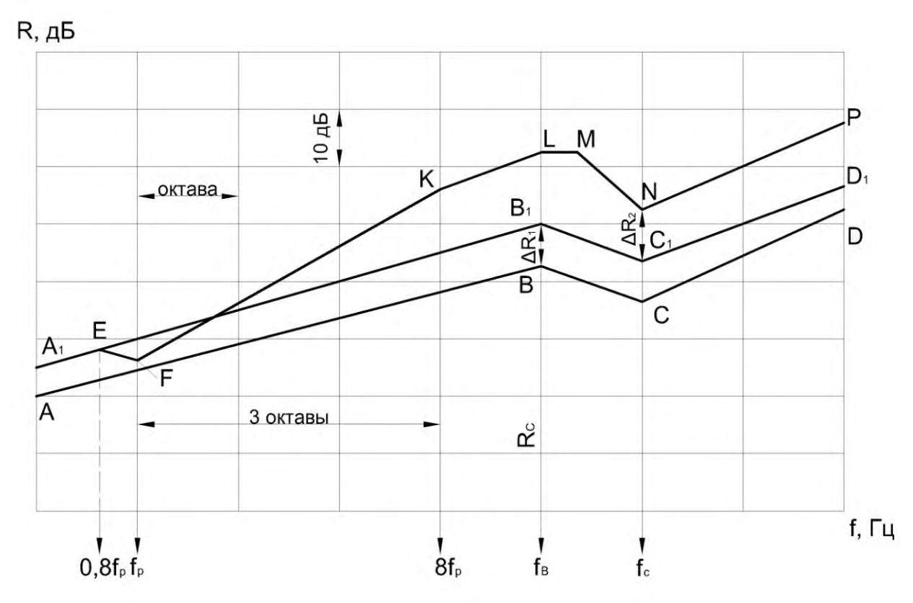
Частота резонанса конструкции f p, Гц, определяется по формуле
где 2 1 и m m - поверхностные плотности обшивок, кг/м² ; d - толщина воздушного промежутка, м.
При одинаковой толщине обшивок ( m1 = m2) частота резонанса определяется по формуле
Значение частоты f р округляется до ближайшей среднегеометрической частоты 1/3-октавной полосы. До частоты 0,8 f р включительно частотная характеристика звукоизоляции конструкции совпадает со вспомогательной линией A 1 B 1 C 1 D 1 (точка F рисунок 3). На частоте f р звукоизоляция принимается на 4 дБ ниже линии ABCD (точка F рисунок 3).
На частоте 8fр (три октавы выше частоты резонанса) находится точка К с ординатой RK = RF + H , которая соединяется с точкой F . Значения величины Н в зависимости от толщины воздушного промежутка приведены в таблице 12. От точки К проводится отрезок KL с наклоном 4,5 дБ на октаву до частоты fВ параллельно вспомогательной линии A 1 B 1 C 1 D1.
Таблица 12
| Толщина воздушного промежутка d , мм | Величина H , дБ |
|---|---|
| 15-25 | 22 |
| 50 | 24 |
| 100 | 26 |
| 150 | 27 |
| 200 | 28 |
Превышение отрезка KL над вспомогательной кривой A1B1C1D1 представляет собой поправку на влияние воздушного промежутка ∆R2 (в диапазоне частот выше 8f р ) . В том случае, когда fB = 8f р, точки K и L сливаются в одну точку. Если f B < 8f р, отрезок FK проводится только до точки L , соответствующей частоте fB . Точка К в этом случае лежит вне расчетной частотной характеристики и является вспомогательной.
От точки L до частоты 1,25 fB ( до следующей 1/3-октавной полосы) проводится горизонтальный отрезок LM . На частоте fС находится точка N путем прибавления к значению вспомогательной линии A 1 B 1 C 1 D 1 поправки ∆R2 (а именно, RN = RC1 +∆R2) и соединяется с точкой M. Далее проводится отрезок NP с наклоном 7,5 дБ на октаву.
Ломаная линия A1EFKLMNP представляет собой частотную характеристику изоляции воздушного шума рассматриваемой конструкции
Примечания:
1 В тех случаях, когда перегородка имеет конструкцию, описанную в 9.3, но одна или обе ее обшивки состоят из двух не склеенных между собой листов, ее частотная характеристика изоляции воздушного шума строится в соответствии с 9.3, но с учетом увеличения поверхностных плотностей m 1 , m 2 и m общ . При этом звукоизоляция на частоте fС увеличивается на ∆R3 = 2 дБ, если одна из обшивок состоит из двух слоев листового материала (другая из одного слоя) и ∆R3 = 3дБ, если обе обшивки состоят из двух слоев листового материала. При построении частотной характеристики на графике следует отметить точку S на частоте fС с ординатой RS = RN + ∆R3 =RC + ∆R1 + ∆R2 + ∆R3 , из которой проводится вправо отрезок ST с наклоном 7,5 дБ на октаву.
2 Расчеты, изложенные в 9.2 и 9.3, дают достоверные результаты при отношении толщины разделяющего ограждения (подлежащего расчету) к средней толщине примыкающих к нему ограждений в пределах 1,5 0,5 прим. h h . При других отношениях толщин необходимо учитывать изменение звукоизоляции ∆R за счет увеличения или уменьшения косвенной передачи звука через примыкающие конструкции.
3 Для крупнопанельных зданий, в которых ограждающие конструкции выполнены из бетона, железобетона, бетона на легких заполнителях поправка ∆R имеет следующие значения:
Для зданий из монолитного бетона значение ∆R должно быть уменьшено на 1 дБ.
В каркасно-панельных зданиях, где элементы каркаса выполняют роль виброзадерживающих масс в стыках панелей, вводится дополнительная поправка к результатам расчета ∆R = + 2дБ.
Частотная характеристика изоляции воздушного шума каркаснообшивной перегородкой, выполненной из одного из указанных в 9.2 материалов при различной толщине листов обшивки (соотношение толщин не более 2,5), а также двойного глухого остекления при различной толщине стекол, строится в следующей последовательности:
Строится частотная характеристика изоляции воздушного шума одним листом (большей толщины) в соответствии с 9.2 - ломаная линия ABCD (рисунок 4). Определяется частота fС 2 для листа обшивки меньшей толщины. Строится вспомогательная линия A 1 B 1 до частоты fB путем прибавления к значениям звукоизоляции первого (более толстого листа) поправки ∆R 1 на увеличение поверхностной плотности ограждения по таблице 11. Между частотами fB 1 И fС 2 проводится горизонтальный отрезок B 1 C 1 и далее отрезок C 1 D 1 с наклоном 7,5 дБ на октаву.
Определяется частота резонанса конструкции f р по формуле (7). До частоты 0,8f р включительно частотная характеристика изоляции воздушного шума конструкцией совпадает со вспомогательной линией A 1 B 1. На частоте f р звукоизоляция принимается на 4 дБ ниже вспомогательной линии A 1 B 1 (точка F , рисунок 4).
На частоте 8 f р находится точка К с ординатой RK = RF + H, где H - величина, определяемая по таблице 12 в зависимости от толщины воздушного промежутка.
От точки К частотная характеристика строится параллельно A 1 B 1 C 1 D 1, т.е. проводится отрезок KL с наклоном 4,5 дБ на октаву до вспомогательной линии A 1 B 1 C 1 D 1 , т.е. проводится отрезок KL с наклоном 4,5 дБ на октаву до частоты fB 1 , а затем горизонтальный отрезок LM до частоты fС 2 и далее отрезок MN с наклоном 7,5 дБ на октаву.
Рисунок 4 - Частотная характеристика изоляции воздушного шума
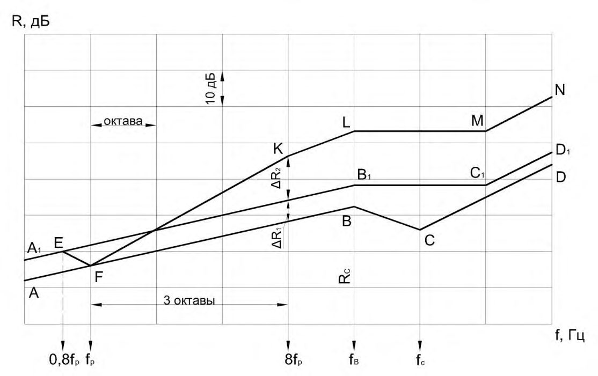
конструкцией, состоящей из двух листов различной толщины с воздушным промежутком между ними
Если частота fB < 8 f р , отрезок FK проводится только до точки L , соответствующей частоте f B . Точка L в этом случае лежит вне частотной характеристики и является вспомогательной.
Ломаная линия A 1 EFKLMN (рисунок 4) представляет собой частотную характеристику изоляции воздушного шума рассматриваемой конструкции.
9.5Расчет изоляции воздушного шума каркасно-обшивной перегородкой при заполнении воздушного промежутка пористым или пористоволокнистым материалом
Частотная характеристика изоляции воздушного шума каркасно-обшивной перегородкой из одного из указанных в 9.2 материалов при заполнении воздушного промежутка пористым или пористо-волокнистым материалом строится в следующей последовательности:
Строится частотная характеристика звукоизоляции с незаполненным воздушным промежутком в соответствии с 9.3. Следует учесть, что в об- щую поверхностную плотность конструкции m общ при определении поправки ∆R1 включается поверхностная плотность заполнения воздушного промежутка пористым или пористо-волокнистым материалом.
Частота резонанса конструкции fр при заполнении воздушного промежутка полностью или частично минераловатными или стекловолокнистыми плитами определяется по формуле (7).
При заполнении промежутка пористым материалом с жестким скелетом (пенопласт, пенополистирол, фибролит и т.п.) частоту резонанса f , Гц, следует определять по формуле
где 2 1 и m m - поверхностные плотности обшивок, кг/м² ; d - толщина воздушного промежутка, м;
E Д - динамический модуль упругости материала заполнения, Па.
(
Если обшивки не приклеиваются к материалу заполнения воздушного промежутка, значения E Д принимаются с коэффициентом 0,75.
До частоты резонанса f ≤ f р частотная характеристика звукоизоляции конструкции полностью совпадает с частотной характеристикой, построенной для перегородки с незаполненным воздушным промежутком.
На частоте f ≥ 1,6f р звукоизоляция увеличивается дополнительно на значение ∆R4 , которое определяется по таблице 13.
Таблица 13
| Материал заполнения | Заполнение промежутка ма- териалом,% | ∆R 4 , дБ |
|---|---|---|
| Пористо-волокнистый (минеральная вата, | 20 | 2 |
| стек- | 30 | 3 |
| ловолокно) | 40 | 4 |
| ловолокно) | 50-100 | 5 |
| Пористый с жестким ске- летом (пенопласт, пено- полистирол, фибролит) | 100 | 3 |
При построении частотной характеристики звукоизоляции конструкции на частоте f = 1,6f р (2/3-октавные полосы выше частоты резонанса) отмечается точка Q с ординатой на значение ∆R4 выше точки, лежащей на отрезке FK , и соединяется с точкой F . Далее частотная характеристика строится параллельно частотной характеристике звукоизоляции конструкции с незаполненным воздушным промежутком. Ломаная линия A 1 EFQK 1 L 1 M 1 N 1 P 1 является частотной характеристикой изоляции воздушного шума данной конструкцией (рисунок 5).
Рисунок 5 - Частотная характеристика изоляции воздушного шума каркасно-обшивной перегородкой с заполнением воздушного промежутка
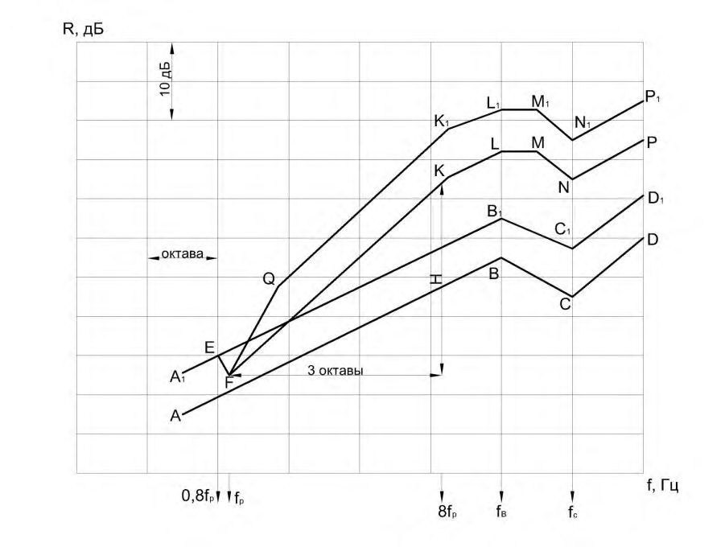
9.6Расчет изоляции воздушного шума ограждением с гибкой плитой на относе
Собственная изоляция воздушного шума такими конструкциями R R R + = 1 , где 1 R - собственная изоляция воздушного шума стеной R - дополнительная звукоизоляция при установке гибкой плиты на некотором расстоянии перед стеной.
Расчет выполняется в следующей последовательности:
Строится частотная характеристика изоляции воздушного шума стеной в соответсвтии с 9.1 (ломаная линия ABCD, рисунок 6);
Рассчитывается дополнительная звукоизоляция при установке гибкой плиты на некотором расстоянии перед стеной по формуле (10)
Здесь ( ) п 0 / 2 1/ k m f = - частота собственных колебаний, Гц, гибкой плиты с поверхностной плотностью п m , кг/ 2 м , на упругом основании (воздушном проме- жутке толщиной d , м, между стеной и плитой) жесткостью k = 0,14/ d , МПа/м; S п коэффициент излучения гибкой плиты; n - число связей, соединяющих плиту со стеной.
Коэффициент излучения плиты при ее связи со стеной линейными элементами (рейками) определяется по формуле
где в с - скорость звука в воздухе, м/с; гр f - граничная частота тонкой плиты, Гц; l - размер стены в направлении, перпендикулярном к линейной связи, м.
Коэффициент излучения плиты при ее точечных связях со стеной (например, по маякам) определяется по формуле
где S - площадь стены, 2 м .
При f > 3 0 f значение дополнительной звукоизоляции ∆𝑅 = -10lg(𝑆п ∙ 𝑛) не зависит от частоты. Точечные связи повышают звукоизоляцию больше, чем линейные. Если облицевать стену гибкими плитами на относе с двух сторон, то значение дополнительной звукоизоляции составит 2∆ R , дБ.
Частотная характеристика изоляции воздушного шума стеной с гибкой плитой на относе R R R + = 1 , дБ, приведена на рисунке 6 (ломаная линия A 1 PB 1 C 1 D 1).
9.7Расчет изоляции воздушного шума двойным ограждением со связью по контуру
В зданиях плиты двойных ограждений связаны между собой через примыкающие к ним конструкции. Помимо прямой передачи звука через двойное ограж-
Рисунок 6 - Построение частотной характеристики изоляции воздушного шума стеной с гибкой плитой на относе
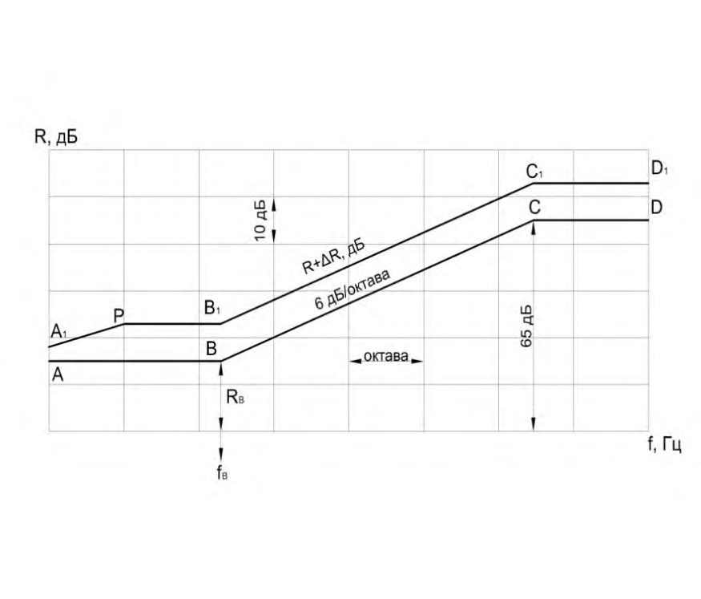
дение важное значение для звукоизоляции такими конструкциями имеет распространение колебаний от одной плиты ограждения к другой через связь по контуру. Поскольку в зданиях плиты двойных ограждений связаны примыкающими к ним конструкциями, сколько-нибудь значительному повышению звукоизоляции при установке второй плиты препятствует косвенная передача шума, учет которой играет решающую роль при оценке фактической звукоизоляции двойным ограждением такого типа.
Приближенный индекс изоляции воздушного шума двойным ограждением в жилых зданиях можно определять по формуле w w w R R R + = 1 ,где Rw 1 - индекс изоляции воздушного шума однослойным ограждением из кирпича, бетона и др. материалов, определяемый в соответствии с 9.1; ∆Rw ≈ 8 дБ.
9.8Расчет изоляции воздушного шума двойным ограждением типа «сэндвич»
Такие ограждения состоят из двух тонких плит, связанных упругим промежуточным слоем - сердцевиной. Отличительная особенность ограждений возможность сочетания при правильном проектировании достаточной жесткости при изгибе и звукоизоляции, подчиненной закону массы в широком диапазоне частот. Этим требованиям ограждения удовлетворяют благодаря жесткости при сдвиге сердцевины и высокой граничной частоте.
Граничная частота «сэндвича» f гр.с при 0,8
где f гр.п - граничная частота, Гц, одной из плит «сэндвича», определяемая по формуле 𝑓 гр.п = 𝑐 𝐵 2 , где ï c - скорость продольной волны в ограждении, принимае-
(1,8𝑐 ï h) мая по таблице 14; ); /( с В с с с = ) /(2 п m G с с с = - скорость распространения сдвиговой волны, м/с, в сердцевине, нагруженной массой п m , кг/ 2 м , равной половине поверхностной плотности «сэндвича»; G - динамический модуль упругости материала сердцевины при сдвиге, Па; δ c - толщина сердцевины, м; h + = 1 -расстояние между срединными плоскостями плит толщиной h , м.
При проектировании значение граничной частоты «сэндвича» задают возможно наибольшим с тем, чтобы область действия закона массы перекрывала требуемый для изоляции шума диапазон частот (например, при использовании таких конструкций в жилых и общественных зданиях желательно, чтобы гр.с f 6500 Гц). Для этого предпочтительно снижать жесткость сердцевины при сдвиге, что приводит к уменьшению параметра . Целесообразно задавать 2 0,1, поскольку при меньших значениях граничная частота гр.с f не повышается.
Таблица 14 - Расчетные значения скоростей продольных волн и коэффициентов потерь в строительных материалах
| Материал | Плотность, кг/м² | Скорость про- дольной волны, м/с | Коэффициент по- терь |
|---|---|---|---|
| Алюминий | 2,7 | 5200 | 10 -3 |
| Сталь | 7,8 | 5500 | 10 -3 |
| Стекло силикат- ное | 2,6 | 5400 | 10 -3 |
| Стекло органи- ческое | 1,2 | 2800 | - |
| Бетон легкий | 0,6 - 1,3 | 1700 | 2·10 -2 |
| Гипсобетон | 1,3 | 4000 | - |
| Кирпичная клад- ка | 1,6 - 1,8 | 2500 | 10 -2 |
| Фанера | 0,6 - 0,7 | 2700 | 3·10 -2 |
| Древесно-стру- | 0,6 - 0,7 | 1700 | 8·10 -2 |
Условие ограничения деформативности конструкции l с / 1/200 ( с - статический прогиб середины конструкции под действием собственного веса, м; l -пролет конструкции «сэндвича», м)
где n 2 m P = g l - линейно распределенная нагрузка на «сэндвич» шириной 1 м, Н/м; g - ускорение свободного падения; c G G / = ; G и c G - соответственно динамический и статический модули упругости материала сердцевины при сдвиге, Па; ) (1 2 - = E E ;
Е и - соответственно модуль Юнга, Па, и коэффициент Пуассона плит «сэндвича» толщиной h , м.
Подбор оптимальных параметров конструкции «сэндвича» выполняют в следующем порядке. Задают 2 = 0,1; находят граничную частоту плит 6850 Гц и далее по формуле ) /(1,8 2 . c h c f п в гр = , в зависимости от выбранного материала плит, находят их толщину. Из условия (14) определяют толщину сердцевины, а из уравнения 1 2 в 2 ) ( -= gl Pc G c = 0,1 - требуемое значение динамического модуля упругости G материала при сдвиге. Кроме того, необходимо, чтобы в нормируемом диапазоне частот отсутствовала собственная частота симметричных колебаний плит «сэндвича», т.е.
В таблице 15 приведена изоляция воздушного шума легкими ограждениями типа «сэндвич».
Таблица 15 - Изоляция воздушного шума легкими ограждениями типа «сэндвич»
| Наименование наружных плит | Материал сердцевины | Общая тол- щина кон- струкции,мм | Поверхностная плотность,кг/м² | R , дБ |
|---|---|---|---|---|
| Древесностружечные плиты 2х4 | Сотопласт | 16 | 11 | 22 |
СП 275.1325800.2016
| Древесностружечные плиты 2х4 | Сотопласт | 76 | 11 | 13 |
|---|---|---|---|---|
| Алюминиевые плиты 2х1,5 | Сотопласт | 38 | 12 | 15 |
| Алюминиевые листы 2х0,6 | Сотопласт | 62 | 6 | 12 |
| Алюминиевые листы 2х0,8 | Жесткий пено- полиуретан плотностью 50 кг/м³ | 48 | 6 | 20 |
| Стальные листы 2х1 | Жесткий пенопо- лиуретан плот- ностью 50 кг/м³ | 60 | 22 | 7 |
| Гипсовые плиты 2х10 | Жесткий пено- полиуретан плотностью 50 кг/м³ | 60 | 25 | 22 |
9.9Расчет изоляции воздушного шума составными ограждениями, а также ограждениями со щелями и отверстиями
Если ограждающая конструкция состоит из нескольких частей с различной звукоизоляцией (например, стена с окном или дверью), ее изоляцию воздушного шума R ср, дБ, следует определять по формуле
где S общ - общая площадь данной конструкции , м² ;
Si - площадь i -й части, м² ;
Ri - изоляция воздушного шума i -й части, дБ.
Если ограждающая конструкция состоит из двух частей с различной звукоизоляцией (стена с окном или стена с дверью), причем R1 > R2, то R ср, дБ, определяется по формуле
Если ограждающая конструкция имеет открытый проем (створка окна, окно целиком или форточка, вентиляционные отверстия без глушителей шума) изоляция воздушного шума этой конструкцией (СП 51.13330) определяется по формуле
:
где S o - площадь открытого проема, м² .
Изоляцию воздушного шума ограждением со щелью или отверстием определяют по формуле
где 1 R и щ.о R - изоляция воздушного шума соответственно глухой частью ограждения и щелью (отверстием); щ.о 1 и S S - площади соответственно ограждения и щели (отверстия), 2 м .
где в / c bf = ; b - ширина щели, м; m = 1 для щели в середине ограждения; m = 0,5 для щели по краю ограждения; γ = l/b ; l - глубина щели или отверстия, м; щ.о 2 l - концевая поправка, учитывающая присоединенный объем воздуха у обеих сторон щели или отверстия, связанный при колебаниях с воздухом соответственно щели или отверстия, 1 ) 4lg( 4 0,368 2 = = b l ù ;
2 ; / 2 / 2; 2 щ щ 0 = = = n b l r l для отверстия в середине ограждения; n = 1 для отверстия у края ограждения; n = 0,5 для отверстия в углу; η = в / ; / c rf r l = ; r - радиус отверстия, м.
При частотах ( ) щ.о в 2 / 6 l l c f + усредненные в полосах частот значения звукоизоляции щелями или отверстиями:
Формула (22) применима при γ = l/b < 2 . Для случая γ > 2 значения звукоизоляции щелью щ R при расположении щели в средней части ограждения приведены на рисунке 7. Если щель расположена у края ограждения, значения R щ, дБ, следует принимать на 6 дБ меньше R щ.
Щели и отверстия оказывают тем большее влияние на звукоизоляцию ограждением, чем выше его собственная звукоизоляция 1 R . Если ширина щели или диаметр отверстия больше длины падающей на них звуковой волны ( b или 2r > f с / в ), то 0. щ.о R
R щ, дБ
Рисунок 7 - Значения звукоизоляции для щелей, расположенных в средней части ограждения
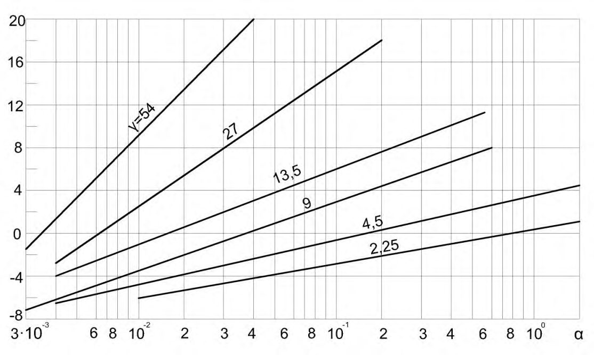
9.10Расчет изоляции воздушного шума междуэтажным перекрытием с полом из рулонных материалов (типа линолеум) и без звукоизоляционного упругого слоя
Индекс изоляции воздушного шума Rw , дБ, междуэтажным перекрытием без звукоизоляционного слоя с полом из рулонных материалов следует определять в соответствии с 9.2 или 9.3, принимая при этом значение m равным поверхностной плотности плиты перекрытия (без рулонного пола).
Если в качестве покрытия чистого пола используют поливинилхлоридный линолеум на волокнистой теплозвукоизоляционной подоснове, то рассчитанное значение индекса изоляции воздушного шума междуэтажным перекрытием следует уменьшать на 1 дБ.
9.11Расчет индекса изоляции воздушного шума перекрытием типа «плавающий пол»
Индекс изоляции воздушного шума Rw , дБ, междуэтажным перекрытием со звукоизолирующим слоем («плавающий пол») следует определять по таблице 16 в зависимости от значения индекса изоляции воздушного шума несущей плитой перекрытия Rwo , определенного в соответствии с 9.2 или 9.3 и частоты резонанса конструкции f р, Гц, определяемой по формуле (9). В формуле Е Д - динамический модуль упругости материала звукоизоляционного слоя, Па, принимаемый по таблице 17 ; m1 - поверхностная плотность несущей плиты перекрытия,кг/м² ; m2 -поверхностная плотность конструкции пола выше звукоизоляционного слоя, кг/м² ; d - толщина звукоизоляционного слоя в обжатом состоянии,м, определяемая по формуле ), (1 - = o d d где d o -толщина звукоизоляционного слоя в необжатом состоянии, м; ε Д - относительное сжатие материала звукоизоляционного слоя под нагрузкой, принимаемое по таблице 17.
Таблица 16 - Индекс изоляции воздушного шума перекрытием Rw , дБ, при индексе изоляции несущей плитой перекрытия Rwo , дБ
| Конструкция пола | f р , Гц | Индекс изоляции воздушного шума перекрытием R w ,дБ, при индексе изоляции несущей плитой пере- крытия R wo ,дБ | Индекс изоляции воздушного шума перекрытием R w ,дБ, при индексе изоляции несущей плитой пере- крытия R wo ,дБ | Индекс изоляции воздушного шума перекрытием R w ,дБ, при индексе изоляции несущей плитой пере- крытия R wo ,дБ | Индекс изоляции воздушного шума перекрытием R w ,дБ, при индексе изоляции несущей плитой пере- крытия R wo ,дБ | Индекс изоляции воздушного шума перекрытием R w ,дБ, при индексе изоляции несущей плитой пере- крытия R wo ,дБ | Индекс изоляции воздушного шума перекрытием R w ,дБ, при индексе изоляции несущей плитой пере- крытия R wo ,дБ |
|---|---|---|---|---|---|---|---|
| 43 | 46 | 49 | 52 | 55 | 57 | ||
| 1 Деревянные по- лы по лагам, уло- женным на звуко- изоляционный слой (ЗИ слой) в виде ленточных прокла- док с Е д = 5∙10 5 - 12∙10 5 Па при рас- стоянии между по- лом и несущей плитой перекрытия 60 - 70 мм | 160 200 250 320 400 500 | 53 50 49 48 47 46 | 53 50 49 48 47 46 | 55 53 52 51 50 - | 56 54 53 53 52 - | 57 56 55 55 - | 58 58 57 - - - |
| 2 Покрытие пола на моноли- тной стяжке или сборных плитах с | 63 80 100 125 | - 53 52 51 | 55 54 53 52 | 56 55 54 53 | 57 56 55 54 | 58 57 56 55 | 59 58 58 |
| m = 60 - 120 кг/м² по ЗИ слою с Е д = 3∙10 5 - 10∙10 5 Па | 160 200 | 50 47 | 51 49 | 53 51 | 54 53 | 55 - | 57 57 - |
|---|---|---|---|---|---|---|---|
| 3 То же, по ЗИ слою из песка с Е д = 12∙10 6 Па | 200 250 320 400 500 | - 50 49 48 47 | 53 52 51 50 49 | 54 53 52 51 51 | 55 54 54 53 53 | 56 55 55 55 55 | 58 57 57 57 57 |
Таблица 17 - Динамический модуль упругости и относительное сжатие материала звукоизоляционного слоя при нагрузке на звукоизоляционный слой
| Материалы | Плот- ность, кг/м² | Динамический модуль упругости Е Д , Па, и от- носительное сжатие ε Д материала звукоизо- ляционного слоя при нагрузке на звукоизоля- ционный слой,Па | Динамический модуль упругости Е Д , Па, и от- носительное сжатие ε Д материала звукоизо- ляционного слоя при нагрузке на звукоизоля- ционный слой,Па | Динамический модуль упругости Е Д , Па, и от- носительное сжатие ε Д материала звукоизо- ляционного слоя при нагрузке на звукоизоля- ционный слой,Па | Динамический модуль упругости Е Д , Па, и от- носительное сжатие ε Д материала звукоизо- ляционного слоя при нагрузке на звукоизоля- ционный слой,Па | Динамический модуль упругости Е Д , Па, и от- носительное сжатие ε Д материала звукоизо- ляционного слоя при нагрузке на звукоизоля- ционный слой,Па | Динамический модуль упругости Е Д , Па, и от- носительное сжатие ε Д материала звукоизо- ляционного слоя при нагрузке на звукоизоля- ционный слой,Па |
|---|---|---|---|---|---|---|---|
| 2000 | 2000 | 5000 | 5000 | 10000 | 10000 | ||
| Е Д | ε Д | Е Д , | ε Д | Е Д | ε Д | ||
| 1 Плиты минера- ловатные на син- тетическом связу- ющем Полужесткие | |||||||
| Жесткие | 70-90 95-100 110-125 130-150 | 3,6∙10 5 4,0∙10 5 4,5∙10 5 5,0∙10 5 | 0,5 0,5 0,5 0,4 | 4,5∙10 5 5,0∙10 5 5,5∙10 5 6,0∙10 5 | 0,55 0,55 0,5 0,45 | 5,6∙10 5 6,0∙10 5 7,0∙10 5 8,0∙10 5 | 0,7 0,65 0,6 0,55 |
| 2 Плиты из изо- вербального во- локна на синте- тическом связу- ющем | 70-90 100-120 125-150 | 1,9∙10 5 2,7∙10 5 3,6∙10 5 | 0,1 0,08 0,07 | 2,0∙10 5 3∙10 5 5,0∙10 5 | 0,15 0,10 0,08 | 2,6∙10 5 4,0∙10 5 6,5∙10 5 | 0,2 0,15 0,1 |
| 3 Маты минерало- ватные про- шивные | 75-125 126-175 | 4,0∙10 5 5,0∙10 5 | 0,65 0,5 | 5,0∙10 5 6,5∙10 5 | 0,7 0,55 | - - | - - |
| 4 Плиты древес- новолокнистые мягкие | 250 | 10,0∙10 5 | 0,1 | 12∙10 5 | 0,2 | 12,5∙10 5 | 0,25 |
| 5 Прессованная пробка | 200 | 11,0∙10 5 | 0,1 | 12∙10 5 | 0,2 | 12,5∙10 5 | 0,25 |
| 6 Песок прокален- ный | 1300- 1500 | 120∙10 5 | 0,03 | 13∙10 5 | 0,04 | 14,0∙10 5 | 0,06 |
| 7 Материалы из пенополиэтилена и пенополипропи- лена: велимат | 1,4∙10 5 | 0,19 | 1,6∙10 5 | 0,37 | - - | - - |
| пенополиэкс | 1,8∙10 5 0,02 | 2,5∙10 5 | 0,1 | |||
|---|---|---|---|---|---|---|
| изолон (ППЭ-Л-3020) | 2,0∙10 5 | 0,05 | 3,4∙10 5 | 0,1 | - | - |
| изолон (ППЭ-Л-3010) | 2,3∙10 5 | 0,04 | 3,7∙10 5 | 0,08 | - - | - - |
| энергофлекс, пе- нофол,вилатерм | 2,7∙10 5 | 0,04 | 4,0∙10 5 | 0,1 | - | - |
| парколаг | 2,6∙10 5 | 0,! | 3,7∙10 5 | 0,15 | - | - |
| термофлекс | 4,0∙10 5 | 0,03 | 5,1∙10 5 | 0,1 | - | - |
| порилекс (НПЭ) | 4,7∙10 5 | 0,15 | 5,8∙10 5 | 0,2 | - | - |
| этафом (ППЭ-Р) | 6,4∙10 5 | 0,02 | 8,5∙10 5 | 0,1 | - | - |
| пенотерм | 6,6∙10 5 | 0,1 | 8,5∙10 5 | 0,2 |
Примечания:
1 Для нагрузок на звукоизоляционный слой, не указанных в настоящей таблице, значения Е Д и ε Д следует принимать по линейной интерполяции в зависимости от фактической нагрузки.
2 В таблице даны ориентировочные значения Е Д и ε Д, более точные данные следует брать из сертификатов на материалы .
9.12Расчет приведенного индекса изоляции ударного шума междуэтажным перекрытием с полом на звукоизоляционном упругом слое
Индекс приведенного уровня ударного шума L n w , дБ, под междуэтажным перекрытием с полом на звукоизоляционном слое (ГОСТ Р ЕН 12354-2) следует определять по таблице 18 в зависимости от значения индекса приведенного уровня ударного шума для несущей плиты перекрытия (сплошного сечения или с круглыми пустотами) L n wо ., определенного по таблице 19, и частоты f 0 собственных колебаний пола, лежащего на звукоизоляционном слое. Частота f 0, Гц, определяется по формуле
где Е д - динамический модуль упругости звукоизоляционного слоя, Па, принимаемый по таблице 19; d - толщина звукоизоляционного слоя в обжатом состоянии, м;
2 m - поверхностная плотность пола (без звукоизоляционного слоя), кг/м² .
Динамический модуль упругости и относительное сжатие материала звукоизоляционного слоя при нагрузке на звукоизоляционный слой приведены в таблице 17.
Индекс приведенного уровня ударного шума Lnw , дБ под перекрытием без звукоизоляционного слоя с полом из рулонных материалов следует определять по формуле
где ∆Lnw - индекс снижения приведенного уровня ударного шума, дБ, принимаемый в соответствии с паспортными данными на рулонный материал.
Значения ∆Lnw для рулонных материалов покрытий полов принимаются по данным сертификационных испытаний образцов этих материалов (ГОСТ 27296).
Таблица 18 - Индексы приведенного уровня ударного шума под перекрытием Lnw , дБ, при индексе для несущей плиты перекрытия Lnwо , дБ
| Конструкция по- ла | f 0 , Гц | Индексы приведенного уровня ударного шума под перекрытием L nw , дБ, при индексе для несущей пли- ты перекрытия L , дБ | Индексы приведенного уровня ударного шума под перекрытием L nw , дБ, при индексе для несущей пли- ты перекрытия L , дБ | Индексы приведенного уровня ударного шума под перекрытием L nw , дБ, при индексе для несущей пли- ты перекрытия L , дБ | Индексы приведенного уровня ударного шума под перекрытием L nw , дБ, при индексе для несущей пли- ты перекрытия L , дБ | Индексы приведенного уровня ударного шума под перекрытием L nw , дБ, при индексе для несущей пли- ты перекрытия L , дБ | Индексы приведенного уровня ударного шума под перекрытием L nw , дБ, при индексе для несущей пли- ты перекрытия L , дБ | Индексы приведенного уровня ударного шума под перекрытием L nw , дБ, при индексе для несущей пли- ты перекрытия L , дБ |
|---|---|---|---|---|---|---|---|---|
| 86 | 84 | 82 | 80 | 78 | 76 | 74 | ||
| 1 Деревянные полы по лагам, | 160 | 59 | 58 | 56 | 55 | 54 | 54 | 53 |
| уложенным на звукоизоляцион- ный слой (ЗИ | 200 | 61 | 60 | 58 | 57 | 55 | 54 | 54 |
| слой) в виде ленточных про- кладок с Е д = | 250 | 62 | 61 | 59 | 58 | 56 | 55 | 55 |
| 5∙10 5 - 12∙10 5 Па при расстоянии между полом и несущей плитой перекрытия 60 - 70 мм | 315 | 64 | 62 | 60 | 59 | 57 | 56 | 56 |
| 2 Покрытие пола на сборных пли- тах с m = 30кг/м² | 100 125 | 60 64 | 58 62 66 | 56 60 64 | 54 58 62 | 52 56 60 | 51 55 59 | 50 54 |
| 160 | 68 | 58 | ||||||
| по ЗИ слою с Е д = | 200 | 70 | 68 | 66 | 64 | 62 | 61 | 60 |
| 3∙10 5 - 10∙10 5 Па | 250 | 72 | 70 | 68 | 66 | 64 | 63 | 62 |
| 3 Покрытие пола | 60 | 61 | 58 | 56 | 54 | 51 | 49 | 48 |
| на монолитной | 80 | 62 | 59 | 57 | 56 | 53 | 52 | 51 |
| стяжке или сбор- | 100 | 64 | 61 | 59 | 57 | 56 | 55 | 54 |
| ных плитах с | 125 | 66 | 63 | 61 | 59 | 58 | 57 | 56 |
| m = 60кг/м² по ЗИ | 160 | 68 | 65 | 63 | 61 | 60 | 58 | 57 |
| слою с Е д = 3∙10 5 - 10∙10 5 Па | 200 | 70 | 68 | 66 | 64 | 62 | 60 | 59 |
| 4 То же, по ЗИ слою из песка с Е д = 12∙10 6 Па | 160 200 250 315 | 62 65 67 71 | 60 63 65 69 | 58 61 63 67 | 57 59 61 66 | 55 58 60 64 | 54 57 59 63 | 53 56 58 62 |
|---|---|---|---|---|---|---|---|---|
| 5 Покрытие пола на монолитной стяжке или сбор- ных плитах с m = 120кг/м² по ЗИ слою с Е д = 3∙10 5 - 10∙10 5 Па | 60 80 100 125 160 200 | 59 61 63 65 67 68 | 56 58 60 62 64 65 | 54 56 58 60 62 64 | 52 54 57 58 60 62 | 50 23 55 56 58 60 | 48 50 53 54 56 58 | 47 49 52 53 55 57 |
| 6 То же, по ЗИ слою из песка Е д = 12∙10 6 Па | 160 200 250 315 | 61 63 65 69 | 58 60 63 67 | 56 58 61 65 | 55 57 59 64 | 53 55 58 62 | 52 54 57 61 | 51 53 56 60 |
Примечание - При промежуточных значениях поверхностной плотности стяжки (сборных плит) индексы следует определять методом интерполяции, округляя до целого числа дБ.
Таблица 19 - Значения Lnwо , дБ, в зависимости от поверхностной плотности несущей плиты перекрытия, кг/м²
| Поверхностная плотность несу- щей плиты перекрытия, кг/м² | Значение L nwо , дБ |
|---|---|
| 1 | 2 |
| 150 | 86 |
| 200 | 84 |
| 250 | 82 |
| 300 | 80 |
| 350 | 78 |
| 400 | 77 |
| 450 | 76 |
| 500 | 75 |
| 550 | 74 |
| 600 | 73 |
2 При заполнении пространства над подвесным потолком звукопоглощающим материалом из значений Lnwо вычитается 2 дБ.
9.13Ориентировочные ускоренные методы оценки индекса изоляции воздушного шума и приведенного индекса изоляции ударного шума
При ориентировочных расчетах индекс изоляции воздушного шума Rw , дБ, ограждающими конструкциями сплошного сечения из материалов, указанных в 9.1, допускается определять по формуле
где K определяется по таблице 9.
При ориентировочных расчетах индекс изоляции воздушного шума Rw , дБ, ограждающими конструкциями из тяжелого бетона с круглыми пустотами допускается определять по формуле
где h пр - приведенная толщина плиты,м h - толщина плиты, м.
При предварительном выборе материала упругой прокладки (звукоизоляционный слой) индекс приведенного уровня ударного шума под перекрытием ориентировочно можно определять по формуле (25).
10Проектирование ограждающих конструкций, обеспечивающих нормативную звукоизоляцию
10.1Рекомендации общего характера
Внутренние стены и перегородки из кирпича, керамических и шлакобетонных блоков рекомендуется проектировать с заполнением швов на всю толщину (без пустошовки) и оштукатуренными с двух сторон безусадочным раствором.
10.2Проектирование внутренних стен и перегородок
В конструкциях каркасно-обшивных перегородок следует предусматривать точечное крепление листов к каркасу с шагом не менее 300 мм. Если применяют два слоя листов обшивки с одной стороны каркаса, то они не должны склеиваться между собой. Шаг стоек каркаса и расстояние между его горизонтальными элементами рекомендуется принимать не менее 600 мм. Рекомендованное выше заполнение промежутка мягкими звукопоглощающими материалами особенно эффективно для улучшения звукоизоляции каркасно-обшивных перегородок. Кроме того, для повышения их звукоизоляции рекомендуются самостоятельные каркасы для каждой из обшивок, а в необходимых случаях возможно применение двух- или трехслойной обшивки с каждой стороны перегородки.
В качестве материала обшивки могут использоваться: гипсокартонные листы, твердые древесно-волокнистые плиты и подобные листовые материалы, прикрепленные к стене по деревянным рейкам, по линейным или точечным маякам из гипсового раствора. Воздушный промежуток между стеной и обшивкой целесообразно выполнять толщиной 40-50 мм и заполнять мягким звукопоглощающим материалом (минераловатными или стекловолокнистыми плитами, матами и т.п.).
10.3Проектирование междуэтажных перекрытий
При проектировании пола с основанием в виде монолитной плавающей стяжки следует располагать по звукоизоляционному слою сплошной гидроизоляционный слой (например, пергамин, гидроизол, рубероид и т.п.) с перехлестыванием в стыках не менее 20 см. В стыках звукоизоляционных плит (матов) не должно быть щелей и зазоров.
Другой возможный конструктивный вариант при размещении шумных помещений в первых нежилых этажах - устройство промежуточного
1 -несущая часть междуэтажного перекрытия; 2 -бетонное основание пола 5 -гибкий пластмассовый плинтус; 6 -стена; 7 -деревянная галтель; 8 -дощатый пол на лагах
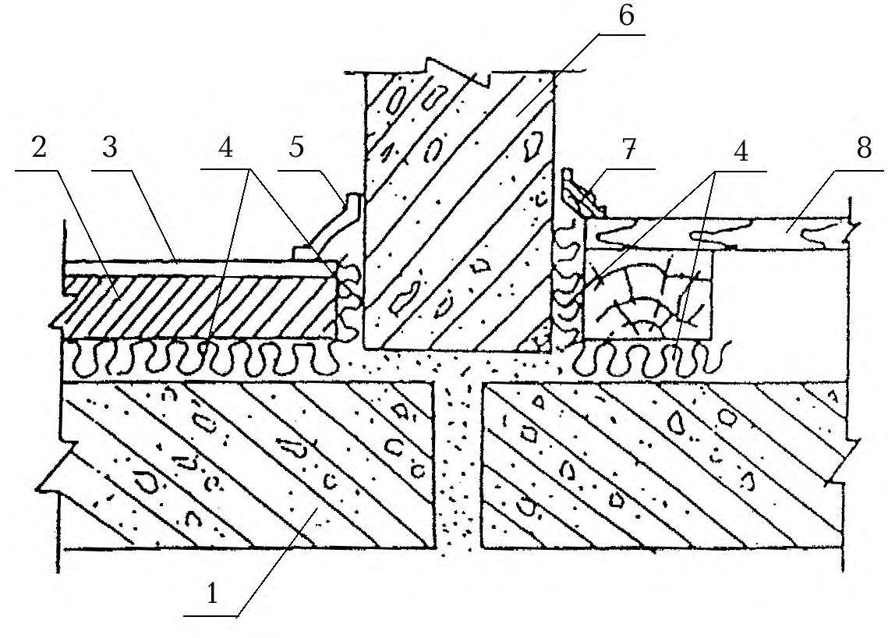
Рисунок 8 - Схема конструктивного решения узла примыкания пола на звукоизоляционном слое к стене (перегородке)
(технического) второго этажа. При этом также необходимо выполнить расчеты, подтверждающие достаточную звукоизоляцию жилых помещений. Во всех случаях размещения в первых нежилых этажах помещений с источниками шума рекомендуется устройство в них подвесных потолков, значительно увеличивающих звукоизоляцию перекрытий.
10.4Проектирование стыков и узлов
Стыки, в которых в процессе эксплуатации, несмотря на принятые конструктивные меры, возможно взаимное перемещение стыкуемых элементов под воздействием нагрузки, температурные и усадочные деформации, следует конструировать с применением долговечных герметизирующих упругих материалов и изделий, приклеиваемых к стыкуемым поверхностям.
Стыки между несущими элементами внутренних стен проектируются, как правило, с заполнением раствором или бетоном. Сопрягаемые поверхности стыкуемых элементов должны образовывать полость (колодец), поперечные разме ры которого обеспечивают возможность плотного заполнения ее монтажным бетоном или раствором на всю высоту элемента. Необходимо предусмотреть меры, ограничивающие взаимное перемещение стыкуемых элементов (устройство шпонок, сварка закладных деталей и т.д.). Соединительные детали, выпуски арматуры и т.п. не должны препятствовать заполнению полости стыка бетоном или раствором. Стыки рекомендуется заполнять безусадочным (расширяющимся) бетоном или раствором.
При проектировании сборных элементов конструкций необходимо принимать такую конфигурацию и размеры стыкуемых участков, которые обеспечивают размещение, наклейку, фиксацию и требуемое обжатие герметизирующих материалов и изделий, когда их применение предусмотрено.
10.5Проектирование элементов ограждающих конструкций, связанных с инженерным оборудованием зданий
Трубы водяного отопления, водоснабжения и т.п. должны пропускаться через междуэтажные перекрытия и межкомнатные стены (перегородки) в эластичных гильзах (из пористого полиэтилена и других упругих материалов), допускающих температурные перемещения и деформации труб без образования сквозных щелей (рисунок 9).
Полости в панелях внутренних стен, предназначенные для соединения труб замоноличенных стояков отопления, должны быть заделаны безусадочным бетоном или раствором.
1 -стена; 2 -безусадочный бетон или раствор; 3 -прокладка (слой) из звукоизоляционного материала; 4 -бетонное основание пола; 5 -несущая часть перекрытия; 6 -эластичная гильза; 7 -труба стояка отопления
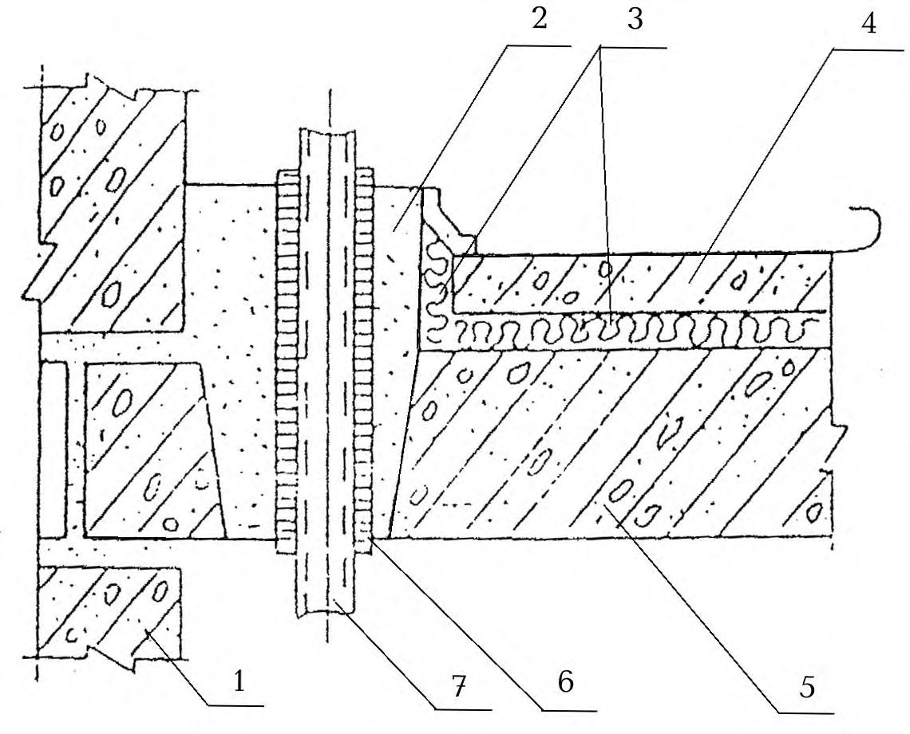
Рисунок 9 -Схема конструктивного решения узла пропуска стояка отопления через междуэтажное перекрытие
Полости для установки распаячных коробок и штепсельных розеток должны быть несквозными. Если образование сквозных отверстий обусловлено технологией изготовления элементов стены, указанные приборы должны устанавливаться в них только с одной стороны. Свободную часть полости заделывают гипсовым или другим безусадочным раствором толщиной слоя не менее 40 мм.
Не рекомендуется устанавливать распаячные коробки и штепсельные розетки в междуквартирных каркасно-обшивных перегородках. В случае необходимости следует применять штепсельные розетки и выключатели, при установке которых не вырезаются отверстия в листах обшивок.
Вывод провода из перекрытия к потолочному светильнику следует предусматривать в несквозной полости. Если образование сквозного отверстия обусловлено технологией изготовления плиты перекрытия, то отверстие должно состоять из двух частей. Верхняя часть большего диаметра должна быть заделана безусадочным раствором, нижняя - заполнена звукопоглощающим материалом
(например, супертонким стекловолокном) и прикрыта со стороны потолка слоем раствора или плотной декоративной крышкой (рисунок 10).
1 -панель перекрытия; 2 -электроканал; 3 -крюк (приварен к круглой стальной пластине); 4 -раствор (заделка нижней части отверстия условно не показана)
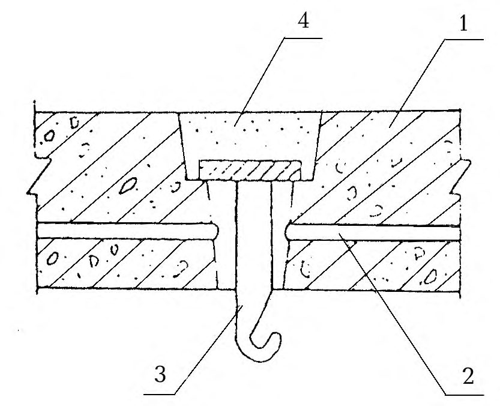
Рисунок 10 -Схема конструктивного решения выпуска провода из перекрытия к потолочному светильнику (перекрытие со сквозным отверстием)
Вентиляционные отверстия смежных по вертикали квартир должны сообщаться между собой через сборный и попутный каналы не ближе, чем через этаж.
АПриложение А (справочное). Примеры расчета звукоизолирующей способности перегородок, стен и междуэтажных перекрытий
Примеры
1 Построить частотную характеристику изоляции воздушного шума перегородкой из тяжелого бетона плотностью 2300 кг/м³ и толщиной 100 мм.
Построение частотной характеристики выполняется в соответствии с рисунком А.1. По таблице 7 находим частоту, соответствующую точке В
октавной полосы, в которой находится fB) .
Определяем поверхностную плотность ограждения m= γh = 2300 ∙0,1 = 230 кг/м² .
Определяем ординату точки В по формуле (5), в нашем случае К =1
Из точки В влево проводим горизонтальный отрезок ВА , вправо от точки В -отрезок BC с наклоном 6 дБ на октаву до точки C с ординатой 65 дБ. Точка С соответствует частоте 10 000 Гц, т.е. находится за пределами нормируемого диапазона частот. Рассчитанная частотная характеристика изоляции воздушного шума указанной конструкцией перегородки приведена на рисунке А.1.
В нормируемом диапазоне частот изоляция воздушного шума составляет:
| f ,Гц | 100 | 125 | 160 | 200 | 250 | 315 | 400 | 500 |
|---|---|---|---|---|---|---|---|---|
| R ,дБ | 35,0 | 35,0 | 35,0 | 35,0 | 35,0 | 35,0 | 37,0 | 39,0 |
| f ,Гц | 630 | 800 | 1000 | 1250 | 1600 | 2000 | 2500 | 3150 |
| R ,дБ | 41,0 | 43,0 | 45,0 | 47,0 | 49,0 | 51,0 | 53,0 | 55,0 |
f , Гц Рисунок А.1 - Расчетная частотная характеристика
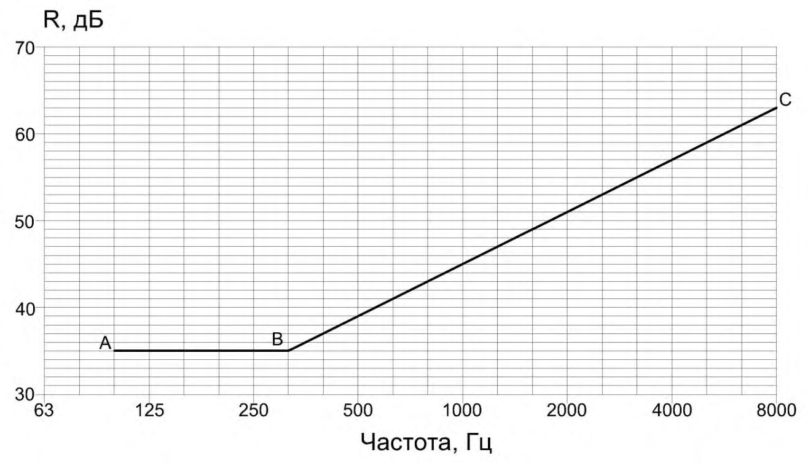
2 Построить частотную характеристику изоляции воздушного шума перегородкой, выполненной из двух листов ГКЛ толщиной 14 мм, γ = 850 кг/м³ . Каркас деревянный. Воздушный промежуток имеет толщину 100 мм.
2.1 Строим частотную характеристику изоляции воздушного шума одним листом ГКЛ в соответствии с 9.2 Координаты точек В и С определяем по таблице 10.
Строим вспомогательную линию ABCD с учетом поправки ∆R 1 , по таблице 11 ∆R 1= 4,5 дБ, далее строим вспомогательную линию A 1 B 1 C 1 D 1 на 4,5 дБ выше линии ABCD (рисунок А.2).
2.2 Определяем частоту резонанса по формуле (7). Поверхностная плотность листа ГКЛ m = γ ∙h = 850∙0,014 = 11,9 кг/м² .
На частоте 80 Гц находим точку F на 4 дБ ниже соответствующей ординаты линии A 1 B 1 C 1 D 1 , RF =16,5 дБ.
Рисунок А.2 - Расчетная частотная характеристика
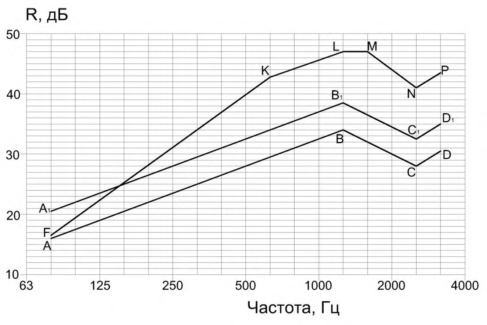
- 2.3 На частоте 8 f р ( 630 Гц) находим точку К с ординатой
42,5 26 16,5 = + = + = H R R F K дБ. H = 26 дБ по таблице 12. От точки К проводим отрезок KL до частоты fB = 1250 Гц с наклоном 4,5 дБ на октаву , R1 = 47 дБ. Превышение отрезка KL над вспомогательной линией A 1 B 1 C 1 D 1 дает нам значение поправки ∆R2 = 8,5 дБ.
2.4 От точки L проводим вправо горизонтальный отрезок LM на одну 1/3октавную полосу. На частоте fС = 2500 Гц строим точку N с ординатой 41 8,5 32,5 2 1 = + = + = R R R C N дБ. От точки N проводим отрезок NP с наклоном 7,5 дБ на октаву.
Линия FKLMNP представляет собой частотную характеристику изоляции воздушного шума данной перегородкой. В нормируемом диапазоне частот звукоизоляция данной конструкцией составляет:
| f ,Гц | 100 | 125 | 160 | 200 | 250 | 315 | 400 | 500 |
|---|---|---|---|---|---|---|---|---|
| R ,дБ | 19,5 | 22,5 | 25,0 | 28,0 | 31,0 | 34,0 | 36,5 | 39,5 |
| f ,Гц | 630 | 800 | 1000 | 1250 | 1600 | 2000 | 2500 | 3150 |
| R ,дБ | 42,5 | 44,0 | 45,5 | 47,0 | 47,0 | 44,0 | 41,0 | 43,5 |
f
, Гц
3 Построить частотную характеристику изоляции воздушного шума перегородкой, выполненной из двух листов сухой гипсовой штукатурки (ГКЛ) толщиной 10 мм, γ = 1100 кг /м³ по деревянному каркасу, воздушный промежуток d = 50 мм заполнен минераловатными плитами ПП-80, γ = 80 кг/м³
3.1 Строим частотную характеристику звукоизоляции для одного листа ГКЛ. Координаты точек В и С определяем по таблице 10.
Общая поверхностная плотность ограждения включает в себя две обшивки с m1 = m2 = γ∙h = 1100∙0,01 = 11 кг/м² и заполнение 80∙0,05 = 4 кг/м² , m общ = 26 кг/м² m общ / m1 = 26/11 = 2,36, по таблице 11 находим ∆R1 = 5,5 дБ.
Строим вспомогательную линию A1B1C1 на 5,5 дБ выше линии АВС (рисунок А.3). Точка С лежит уже вне нормируемого диапазона частот.
3.2 Определяем частоту резонанса конструкции по формуле (7)
На частоте 0 , 8 f р =100 Гц отмечаем точку Е с ординатой 22 5,5 16,5 = + = E R дБ, на частоте f р = 125 Гц отмечаем точку F с ординатой = -+ = 4 5,5 18 F R 19,5 дБ.
3.3 На частоте 8 f р = 1000 Гц отмечаем точку К с ординатой
43,5 24 19,5 = + = + = H R R F K дБ и соединяем её с точкой F .Далее до частоты fB = 2000 Гц проводим отрезок KL с наклоном 4,5 дБ на октаву, RL = 48 дБ до следующей 1/3-октавной полосы 2500 Гц и горизонтальный отрезок LM . На частоте fС = 4000 Гц отмечаем точку N с ординатой
Линия EFKLMN является частотной характеристикой изоляции воздушного шума данной перегородкой, но с незаполненным воздушным промежутком.
3.4 На частоте 1,6 f р = 200 Гц отмечаем точку Q с ординатой RQ = 25+5=30дБ (по таблице 13 поправка ∆R4 = 5 дБ) и соединяем ее с точкой F . Далее строим частотную характеристику параллельно линии FKLMN, прибавляя к ее значениям поправку ∆R4 = 5 дБ.
В нормируемом диапазоне частот изоляция воздушного шума конструкцией составляет:
| f ,Гц | 100 | 125 | 160 | 200 | 250 | 315 | 400 | 500 |
|---|---|---|---|---|---|---|---|---|
| R ,дБ | 22,0 | 19,5 | 24,5 | 30,0 | 32,5 | 35,0 | 38,0 | 40,5 |
| f ,Гц | 630 | 800 | 1000 | 1250 | 1600 | 2000 | 2500 | 3150 |
| R ,дБ | 43,0 | 46,0 | 48,5 | 50,0 | 51,5 | 53,0 | 53,0 | 50,0 |
Ломаная линия А 1 EFQK 1 L 1 M 1 N 1 - частотная характеристика изоляции воздушного шума конструкцией
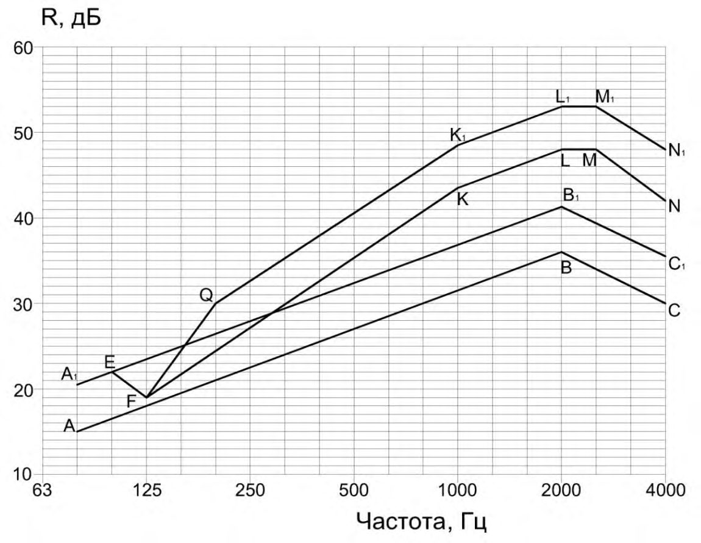
f
, Гц
Рисунок А.3 - Расчетная частотная характеристика
4 Рассчитать индекс изоляции воздушного шума междуэтажным перекрытием. Перекрытие состоит из железобетонной несущей плиты γ = 2500 кг/м³ толщиной 10 см, звукоизоляционных полосовых прокладок из жестких минераловатных плит плотностью 140 кг/м³ толщиной 4 см в необжатом состоянии и дощатого пола толщиной 35 мм, на лагах сечением 100х50 мм с шагом 50 см. Полезная нагрузка 2000 Па
- 4.1 Определяем поверхностные плотности элементов перекрытия:
СП 275.1325800.2016 m1 = 2500∙0,1 = 250 кг/м² ; m2 = 600∙0,035(доски) + 600∙0,05∙0,1∙2(лаги) = 27 кг/м² .
Нагрузка на прокладку (с учетом того, что на 1 м² пола приходятся 2 лаги) равна
В соответствии с 9.13 находим значение Rwо для несущей плиты перекрытия ( К = 1)
4.2 Находим частоту резонанса конструкции по формуле (9) при Е Па; ε = 0,55 (таблица 17) , d =0,04∙(1-0,55) = 0,018 м.
Д = 8,0∙10 5
изоляции воздушного шума данным междуэтажным перекрытием Rw = 52 дБ.
5 Рассчитать индекс приведенного уровня ударного шума под междуэтажным перекрытием. Перекрытие состоит из железобетонной несущей плиты толщиной 12 см, γ = 2500 кг/м³ , звукоизоляционного слоя из мягких ДВП плотностью 250 кг/м² , толщиной 2,5 см в необжатом состоянии, гипсобетонной панели плотностью γ = 1300 кг/м³ , толщиной 5 см и линолеум средней плотностью γ =1100 кг/м³ , толщиной 3 мм. Полезная нагрузка 2000Па
5.1 Определяем поверхностные плотности элементов перекрытия: m1 = 2500∙0,12 = 300 кг/м² ;
Нагрузка на звукоизоляционный слой 2000 + 683 = 2683 Па
По таблице (19) находим Lnwo = 80 дБ.
5.2 Вычисляем частоту колебаний пола по формуле (9) при Е Па, ε = 0,10 (таблица 17), d =0,025∙(1-0,1) = 0,0225 м.
По таблице 18 находим индекс изоляции приведенного уровня ударного шума данным междуэтажным перекрытием - Lnw = 59 дБ.
Д = 10,0∙10 5
6 Подобрать параметры конструкции «сэндвича», обеспечивающие изоляцию воздушного шума во всем нормируемом диапазоне частот по закону массы и обладающей необходимой при монтаже и эксплуатации жесткостью. Длина «сэндвича» l = 3 м, в качестве наружных плит используются алюминиевые листы ( п с = 5400 м/с; 11 1,1 10 = Е Па)
Определяем их толщину по формуле ) (1,8 2 c h c f п B гр =
Принимаем h = 1,5мм. Пренебрегая массой сердцевины, получим Р = 2· 2700· 0,0015· 9,81· 3 = 238Н/м. Полагая = 3, находим по формуле (14)
и далее требуемый динамический модуль упругости материала сердцевины при сдвиге
что соответствует жестким пенопластам.
Собственная частота симметричных колебаний
Запроектированная панель поверхностной плотностью около 10 кг/м² обеспечивает в интервале частот 100-3150 Гц, согласно закону массы, среднюю собственную звукоизоляцию (12,5 + 42,5)/2 = 27,5 дБ и достаточную жесткость конструкции без дополнительного каркаса .
7 Построить частотную характеристику собственной звукоизоляции шлакобетонной стеной толщиной 20 см, плотностью 1800 кг/м³ и длиной l = 5 м с асбестоцементной плитой толщиной 6 мм (поверхностная плотность 2 п 11 кг/м = m , скорость продольной волны п с = 4000м/с), установленной с одной стороны стены по n = 7 вертикально прибитым к стене рейкам толщиной d = 4 см)
Строим частотную характеристику собственной звукоизоляции стеной 1 R . Для этого находим координаты точки B при m = 1800 х 0,2 = 360 кг/ 2 м , откуда fB = 145 Гц ≈ 160 Гц и RB = 39 дБ. По правилам, указанным в 9.1, строим частотную характеристику изоляции воздушного шума стеной. Затем рассчитываем значения дополнительной звукоизоляции ∆ R, дБ. Предварительно по формуле , где сп - скорость продольной волны в ограждении, а также по формулам находим: ) (1,8 2 c h c f п B гр =
Подставим значения 0 f и п s в формулу (10), получим: при f < 90 Гц ∆ R = 0; при f > 90Гц 0,113 ) 10lg (90 / 7 0,0162 ) 10lg (90 / 4 4 + = - + = - f f R .Значение ∆R вычисляем в зависимости от частот нормируемого диапазона по приведенной выше формуле.
В нормируемом диапазоне частот изоляция воздушного шума конструкцией составляет:
| f ,Гц | 100 | 125 | 160 | 200 | 250 | 315 | 400 | 500 |
|---|---|---|---|---|---|---|---|---|
| R+∆R , дБ | 40,1 | 43,2 | 45,7 | 49,1 | 51,9 | 54,2 | 56,4 | 58,4 |
| f ,Гц | 630 | 800 | 1000 | 1250 | 1600 | 2000 | 2500 | 3150 |
| R+∆R , дБ | 60,5 | 62,5 | 64,5 | 66,5 | 68,5 | 70,5 | 72,5 | 74,5 |
.
БПриложение Б (рекомендуемое). Расчет изоляции воздушного шума криволинейным (в частности цилиндрическим) ограждением
Существенную роль при передаче звука через цилиндрические оболочки играют не только изгибные, но и продольные волны. При диффузном звуковом поле звукоизоляция стальными оболочками на частотах f < п f обшивной перегородкой с заполнением воздушного промежутка рассчитывается по формуле
где п m - масса единицы площади оболочки; r с f /2π п п = - частота собственных чисто радиальных колебаний оболочки; п c - скорость продольной волны в стальной плите; r - радиус оболочки. Звукоизоляция оболочкой практически не зависит от частоты.
При расположении источника шума внутри стальной оболочки частотная характеристика звукоизоляции строится в виде ломаной АВСD (рисунок Б.1). Координаты точек В и С находят по формулам:
где d -диаметр оболочки, мм; h - толщина оболочки, мм.
Рисунок Б.1 - Частотная характеристика звукоизоляции цилиндрической оболочкой
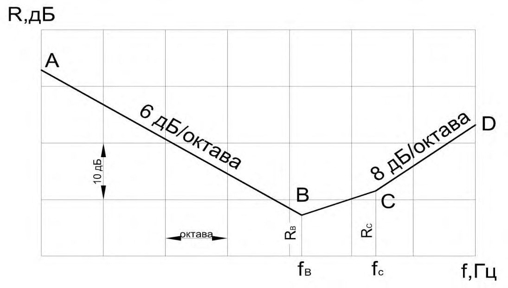
ВПриложение В. (рекомендуемое)
Расчет изоляции воздушного шума двойным ограждением без жесткой связи по контуру
Расчетную модель ограждений обычно принимают в виде двух неограниченных по протяженности плит, связанных упругим слоем. Если скорость продольных волн в слое 1 с < с /3, то роль продольных связей, воспринимающих усилия сдвига, мала, и при расчетах звукоизоляции можно ограничиться рассмотрением плит с упругими поперечными связями, реакция которых пропорциональна разности смещений составляющих плит.
Если, кроме того, длина продольной волны в слое больше шестикратной толщины ограждения, то волновыми процессами в слое можно пренебречь и представить его в виде системы поперечных упругих связей (пружин), непрерывно и равномерно распределенных по поверхности плиты. Тогда, при частотах ниже граничных, для этих плит двойное ограждение представляет собой двухмассовую колебательную систему: масса 1 2 м первой плиты - жесткость поперечных связей, распределенных на площади 1 м² ; масса 1 м² второй плиты. Частота собственных колебаний этой системы
где 2 1 и m m - массы соответственно первой и второй плит, кг/ ; 2 м
К - коэффициент жесткости связей, равный Е/d ( Е - динамический модуль упругости материала упругого слоя; d - его толщина).
При частоте колебаний p f - наблюдается наибольшее прохождение звука через двойное ограждение. Двойные ограждения следует проектировать таким образом, чтобы частота лежала вне области частот с нормируемым диапазоном, т.е. ниже 63 Гц. В частности, для двойных ограждений с воздушным промежутком наименьшее допустимое расстояние между плитами, d мин, м, найденное из условия p f
Звукоизоляция двойным ограждением при частотах p 2 f < f < гр1,2 0,5 f ( гр1,2 f - граничные частоты для плит 1 и 2).
где 2 R и 0 R - звукоизоляция по закону массы однослойными ограждениями массой 1 соответственно 2 1 об 2 и m m m m + = ; 2 м
1 0 / ) 1/(2 K m f = - частота собственных колебаний массы 1 m на упругом основании жесткостью К .
Поскольку частота p f имеет наименьшее значение при 2 1 m m = , то ограждение из двух плит одинаковой массы на частотах ниже граничной обладает наибольшей звукоизолирующей способностью среди других двойных ограждений той же общей массы.
Звукоизоляция двойным ограждением при частотах f > 2 гр 1,2 f
- звукоизоляция плитой с большей цилиндрической жесткостью где ) ( 1 2 D D ,определяемая по формуле 2 R
где - плотность воздуха; - коэффициент потерь материала плиты.
Если ограждение составлено из двух одинаковых плит массой 1 м² п m , цилиндрической жесткостью D и коэффициентом потерь η каждая, то для частот выше граничной
Из сравнения формул (В.6) и (В.7) следует, что в противоположность области частот ниже граничной, при f > гр1 f и равных общих массах, звукоизоляционные качества двойных ограждений из разных плит выше, чем у ограждений из одинаковых плит. Если плиты изготовлены из одного материала, то оптимальными являются соотношения толщин плит 1 2 4) (2 h h = . Однако наибольший звукоизоляционный эффект достигается при и 1. / 2 1 D D Практически достаточно, чтобы цилиндрические жесткости плит отличались друг от друга в 6÷7 раз. Подобные конструкции изготавливаются из материалов с разными плотностями, что позволяет при неодинаковых толщинах получать одинаковые массы составляющих плит. 2 1 m m =
Повышение звукоизоляции такими двойными ограждениями при f > , т.е. в области, где звукоизоляция определяется главным образом явлением волнового совпадения, связано с тем, что ограждения, составленные из разных плит, при одной частоте звука имеют различные углы совпадения, при которых происходит наибольшая передача звука. Поэтому при любом совпадении звуковой волны явление волнового совпадения может возникнуть только в одной из плит. Дополнительное повышение звукоизоляции двойным ограждением из плит одинаковой массы, но с различными цилиндрическими жесткостями, составляет при f > около 10 дБ. гр1 f гр1 f
Таким образом, тонкие плиты двойных ограждений, например стекла, при общей толщине остекления до 10÷14 мм, следует изготовлять одинаковыми, а толстые плиты (двойные стены) - разными.
Если длина продольной волны, распространяющейся в поперечных связях, меньше шестикратной толщины промежутка между плитами, то эти связи представляют в виде упругого слоя, передача звука через который описывается одномерным волновым уравнением. В этом случае для области частот ниже граничной дополнительная звукоизоляция , дБ, двойным ограждением (по сравнению с однослойной массой = 1 м² ) определяется по формуле 1 R п m
где d d m и ρ ); /(ρ c c п 1 = - плотность и толщина упругого слоя; c - коэффициент потерь материала упругого слоя; . / 1 1 c d k =
Зависимость 1 R от безразмерной частоты 1 k приведена на рисунке В.1. Провалы в частотной характеристике соответствуют резонансным колебаниям упругого слоя, возникающим каждый раз, когда по толщине упругого слоя укладывается целое число полуволн , т.е. n n k ( 1 = = 1, 2…). Если усреднить значение в постоянном относительном частотном диапазоне, то получим 1 R
Рисунок В.1 - Дополнительная звукоизоляция двойным ограждением без жесткой связи по контуру
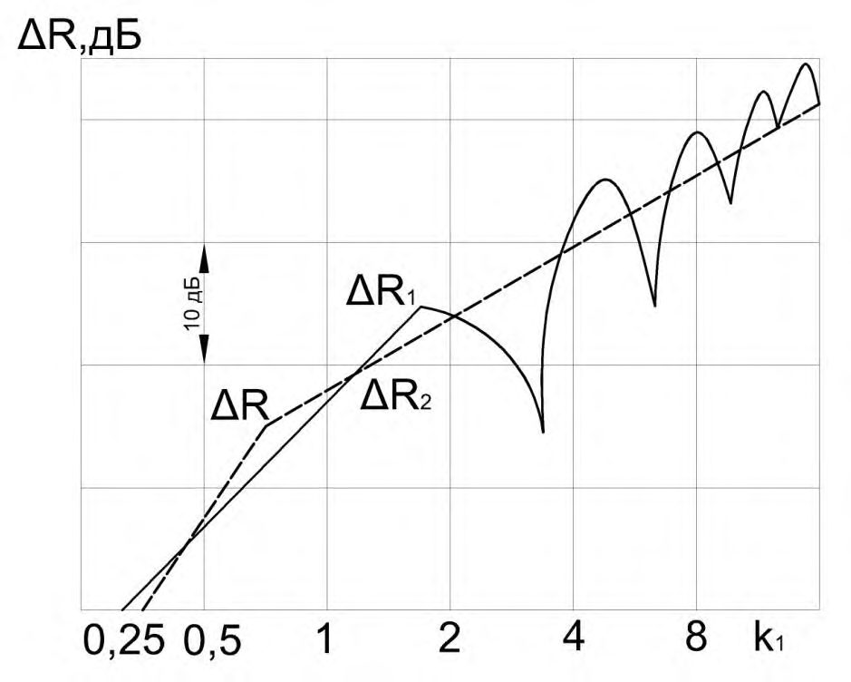
На рисунке В.1 нанесены графики 2 R по формуле (В.9) и R по формуле (В.4а). Таким образом, на низких частотах ( ) /6 1 d c f дополнительная звукоизоляция возрастает на 12 дБ с удвоением частоты (формулы (В.4а) и (В.4б), а на более высоких частотах ( ) /6 1 d c f , согласно формуле (В.9), - только на 6 дБ с удвоением частоты. Причиной снижения эффективности изоляции шума двойными ограждениями являются резонансные колебания упругого слоя. Отметим также, что в этом диапазоне частот значение звукоизоляции не зависит от толщины упругого слоя, хотя сам частотный диапазон, в котором справедлива формула (24), и связан с толщиной слоя. Вычисления показывают, что на часто- тах выше граничной гр f и выше ( ) d m f c п 0 / ρ дополнительная звукоизоляция также имеет тенденцию к увеличению на 6 дБ при удвоении частоты.
При отсутствии упругого материала между плитами двойного ограждения звуковые волны распространяются в воздушном промежутке под возможными углами. В связи с этим дополнительная звукоизоляция на частотах d c f /6 ( c -скорость звука в воздухе) растет только на 6 дБ, а не на 12 дБ при удвоении частоты, и на 4 дБ - при удвоении толщины воздушного промежутка между плитами d . При частотах d c f /6 звукоизоляция не зависит от толщины воздушного промежутка.
Приведенные выше формулы звукоизоляции справедливы при отсутствии жесткой связи по контуру между плитами двойного ограждения.
\_\_\_\_\_\_\_
\_\_\_
\_\_\_\_\_\_\_\_\_\_\_\_\_\_\_\_\_\_\_\_\_\_\_\_\_\_\_\_\_\_\_\_\_\_\_\_\_\_\_\_\_\_\_\_\_\_\_\_\_\_\_\_\_\_\_\_\_\_\_\_\_\_\_\_\_\_\_